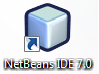
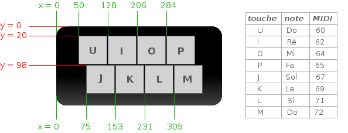

Salut les amis ! J'ai décidé de me lancer dans le projet un peu fou de faire un big-tuto pour le site du zéro. C'est une grande première pour moi mais je suis par contre un grand lecteur des autres tutoriels du site, c'est même ici que j'ai acquis la majorité de mes connaissances en informatique ;)
J'ai décidé de vous faire un tutoriel sur une technologie qui, je pense, en intéressera plus d'un : JavaFX. Je vous sens déjà intrigué... Vous avez sûrement déjà entendu parlé de Java tout court, de JavaScript, mais JavaFX ne vous dit peut être rien :euh: .
En fait, JavaFX est une évolution de Java, elle permet de créer des RIA (Rich Internet Applications), c'est-à-dire des applications contenant des vidéos, de la musique, des effets graphiques très intéressants, etc. JavaFX permet de créer des applications web, des applications pour votre bureau, pour votre téléphone portable et même pour votre télé, mais je me focaliserai surtout sur les applications web dans ce big-tuto.
Pour commencer, je dois me confesser d'une faute grave que je vais commettre dans ce tutoriel : je ne vais pas partir de zéro...
Non mais ça va pas !!! va-t-en tout de suite du site du zéro :colere2:
En fait, je demanderais aux lecteurs d'avoir une certaine connaissance du langage Java : savoir créer des variables, des fonctions, des classes, des objets... Je ne verrai pas les bases du langage Java dans ce tutoriel tout simplement parce qu'il existe déjà un excellent tutoriel sur le site du zéro rédigé par cysboy pour apprendre à programmer en Java. Je consacrerai donc ma première partie aux pré-requis nécessaires pour suivre ce tutoriel et j'indiquerai tous les chapitres du tutoriel de cysboy correspondants à ces pré-requis, j'espère ainsi que ma faute sera un peu pardonnée ;)
Voici quelques exemples d'applications web crées en JavaFX :
Ce tutoriel ne partira donc pas de zéro. Cela dit, je vais faire en sorte de ne pas trahir l'esprit du site en permettant à un zéro qui arriverait sur ce tutoriel de ne pas se sentir désorienté et découragé.
Comme je l'ai dit précédemment, JavaFX est une évolution du langage Java. C'est-à-dire que pour créer une application en JavaFX, on code en langage Java mais on utilise de nouvelles fonctionnalités. J'apprendrais dans ce tutoriel à utiliser ces nouvelles fonctionnalités mais il est nécessaire d'avoir certaines connaissances de base en Java. Pas besoin non plus d'être un expert, mais il faut maîtriser les différents concepts que je vais énumérer dans ce chapitre.
Si vous êtes un zéro en Java, vous trouverez ici la liste de tout ce que vous devrez connaître avant de pouvoir vous attaquer à ce tutoriel, je vous indiquerais les chapitres du tutoriel de cysboy sur le langage Java que vous devrez connaitre. Ce que je peux déjà vous dire, c'est que vous devrez impérativement suivre la partie 1 de son tutoriel [Bien commencer en Java], vous y apprendrez les base du langage. Pour ce qui est de la deuxième partie [Java Orienté Objet], je vous indiquerais les chapitres indispensables. Je dirais que vous en avez pour une bonne dizaine de jours pour vous mettre à niveau... Qu'est-ce que dix jours dans une vie ;) .
Si vous connaissez déjà le langage Java, ce chapitre ne sera pour vous qu'un rappel, c'est l'occasion de vous rafraîchir la mémoire si vous n'avez pas codé en Java depuis longtemps ;) . Au moins on se sera mis d'accord sur la base commune de laquelle on part :) .
Vous devez savoir que tout code informatique est composé des éléments de base que sont les variables et les méthodes.
Les variables
Les variables permettent de stocker les informations de votre programme, elles peuvent contenir des valeurs numériques, des entiers, des nombre à virgule, des caractères, etc... Pour déclarer une variable en Java, on utilise la syntaxe suivante :
Type nom_variable = <valeur>;
exemple :
int age = 29;
Les principaux types de variables étant :
byte : entiers entre -128 et 127
short : entier entre -32768 et 32767
int : entier entre -2*109 et 2*109
long : entier entre -9*1018 et 9*1018
float : nombre à virgule entre -1.4*10-45 et 3.4*1038
double : nombre à virgule entre 4.9*10-324 à 1.7*10308
boolean : booléen égale à true ou à false;
Vous savez également faire des opérations grâce à ces variables grâce aux opérateurs suivant :
+ : additionner
- : soustraire
* : multiplier
/ : diviser
% : opérateur modulo pour récupérer le reste d'une division
Les méthodes sont des blocs d'instructions qui permettent de réaliser un certain nombre d'opérations et éventuellement de retourner un résultat. On peut grâce à elles découper notre code en petits bouts bien organisés. Voici la syntaxe Java pour déclarer une méthode :
Le type de la méthode correspond au type de la valeur qu'elle retourne (ce type est void si elle ne retourne rien) et les paramètres entre parenthèses sont toutes les valeurs d'entrée de la méthode. Une méthode peut avoir autant de paramètres qu'on le souhaite tant qu'ils sont pré-définis.
Ces structures permettent de n'exécuter certaines instructions que sous certaines conditions, c'est un élément fondamental de tout programme informatique. Vous pouvez créer des conditions grâce aux opérateurs logiques suivants :
== : tester si deux valeurs sont égales
!= : tester si deux valeurs sont différentes
< : tester si une valeur est inférieure à une autre
> : tester si une valeur est supérieure à une autre
<= : tester si une valeur est inférieure ou égale à une autre
>= : tester si une valeur est supérieure ou égale à une autre
&& : le ET logique pour tester que deux conditions sont valides
|| : le OU logique pour vérifier que sur deux conditions, au moins l'une est valide
? : l'opérateur ternaire
Les conditions sont abordées dans le chapitre 5 : Les conditions.
Les boucles
Les boucles sont des blocs d'instructions qui peuvent être répétés plusieurs fois. Il existe trois types de boucles :
1. La boucle while :
while(<condition>)
{
//instructions
}
Permet de répéter le bloc d'instructions tant que la condition est vérifiée.
2. La boucle do...while :
do
{
//instructions
}while(<condition>);
Permet d'exécuter le bloc d'instructions au moins une fois, puis de le répéter tant que la condition est valide.
3. Et la boucle for :
for( int i = 0; i < n; i++)
{
//instructions
}
Permet de répéter n fois le bloc d'instructions.
Les boucles sont vues dans le chapitre 6 : Les boucles
Les tableaux permettent de stocker plusieurs informations les unes à la suite des autres pour pouvoir y avoir accès plus facilement. Un tableau ne peut stocker qu'un seul type d'information : des entiers, des nombres à virgule, des chaînes de caractères, etc... Vous savez donc déclarer un tableau grâce à la syntaxe suivante :
Savoir créer et utiliser des objets en Java est absolument fondamental, c'est également le cas en JavaFX. Quand on crée une application en JavaFX, chaque élément de notre interface graphique est un objet, il faut donc bien connaître les bases de la programmation orientée objet (POO) pour coder en JavaFX :) .
La deuxième partie du tutoriel de cysboy Java Orienté Objet y est consacrée. Cette deuxième partie est très riche et très complète et il n'est pas nécessaire de connaître tous les concepts qui y sont abordés pour savoir créer des applications en JavaFX, même si c'est très intéressant et très utile :) . Je vais donc indiquer ici les éléments de base de la POO qui sont vraiment indispensables avec les chapitres correspondants.
Les classes et les objets
Comme on peut s'en douter, savoir déclarer et utiliser un objet est le minimum requis. La syntaxe qui permet de déclarer et de construire un objet en Java est la suivante :
Type mon_objet = new Type();
On appelle la méthode Type() le constructeur de l'objet. Une fois déclaré et construit, nous pouvons avoir accès aux variables, méthodes et autres paramètres qui définissent cet objet de la façon suivante :
C'est de cette façon que l'on manie les objets, qu'on modifie leurs paramètres, qu'on utilise leurs méthodes... Il existe des types d'objets tout-fait comme le type String, mais il est aussi possible de définir nos propres types d'objets grâce aux classes. C'est en créant une classe que l'on définit toutes les variables et les méthodes qui constitueront notre type d'objet. Voici la syntaxe qui permet de définir une classe :
class Nom_classe{
Nom_classe()
{
//instructions du constructeur
}
Type variable1;
Type variable2;
Type methode1()
{
//instructions
}
Type methode2()
{
//instructions
}
}
La première méthode définit dans la classe : Nom_classe(), est le constructeur de la classe, c'est elle qui est appelée à chaque fois qu'un objet de type Nom_classe est construit.
Tout ce qu'il faut savoir sur les classes et les objets est expliqué dans le chapitre 1 de la deuxième partie : Les premiers pas en "Orienté Objet".
L'héritage
Vous devez savoir qu'en Java (comme dans beaucoup de langages orientés objet), il possible pour une classe d'hériter d'une autre classe, c'est-à-dire de reprendre toutes les variables, méthodes et divers paramètres qui définissent la classe mère dont elle hérite et d'y ajouter ses propres paramètres. Voici la syntaxe qui permet à une classe d'hériter d'une classe mère :
class Ma_classe extends Classe_mere{
//définition de la classe fille
}
Le mécanisme de l'héritage est très utilisé en JavaFX. A chaque fois que nous créerons un type d'objet graphique quelconque, nous devrons faire hériter la classe qui définit cet objet de la classe Parent. Nous pourrons ainsi appliquer à notre objet toutes sortes d'actions, d'effets, de transformations... Bref, gardons cela pour plus tard ;). Le mécanisme de l'héritage est expliqué dans le chapitre 2 de la deuxième partie : L'héritage.
Les exceptions
Le mécanisme des exceptions est important à connaître. Une exception est un événement qui se déclenche quand une opération ne peut être gérée. Il peut arriver qu'une instruction ne se déroule pas comme elle le devrait, dans ce cas le langage Java permet de gérer cette défaillance. Pour gérer l'exception que pourrait déclencher un certain bloc d'instructions, on peut l'insérer dans une structure de type try{} catch{}, comme ceci :
try{
//instructions pouvant engendrer une exception
}catch(Exception e){
//instructions à exécuter en cas d'exception
}
Le fonctionnement des exceptions est décrit dans le chapitre 6 de la deuxième partie : Les exceptions.
Voilà ! Si vous avez lutté pour ne pas vous endormir en lisant ce chapitre tellement ce que je disais vous paressait évident, vous êtes prêt pour attaquer le langage JavaFX. Si certains concepts ne vous semblaient pas clairs, vous pouvez toujours réviser en allant voir les chapitres indiqués. Et si vous partez de zéro en Java, je récapitule tous les chapitres que vous devrez intégrer :
Ça vous fait en tout douze chapitres à intégrer. Bien sûre, rien ne vous empêche de lire l'intégralité du tutoriel, vous pourrez même y revenir après avoir appris à coder en JavaFX, cela améliorera la performance et l'efficacité de vos futures programmes ;) . A partir du prochain chapitre, je considérerais que vous savez coder en Java et que vous connaissez les bases de ce langage que je viens d'énumérer :) .
Le but de ce tutoriel est d'apprendre à développer des applications en JavaFX. Cette évolution du Java classique est assez récente, la première version a été créée en 2007 et depuis, de nombreuses évolutions ont eu lieu. La version actuelle de JavaFX est la version 2.0. Pour développer dans ce langage, nous allons utiliser le logiciel Netbeans (v7.0), c'est lui qui nous permettra de transformer notre code source en applications exécutables.
Je préfère vous prévenir tout de suite, l'installation est assez longue, ce sera peut être le chapitre le plus chiant de tout le tutoriel :p . On va devoir installer deux JRE, un JDK, un SDK, un plugin,... Bref, il y a beaucoup d'opérations à exécuter et il suffit que l'une d'elle soit mal faite pour qu'au final on n'arrive pas à compiler notre code... croyez en mon expérience :S J'essaierais pour ma part d'être le plus clair possible :) .
Nous allons commencer par installer un élément que vous avez sûrement déjà : le JRE (Java Runtime Environnement). Vous savez... c'est ce qui permettra à votre ordinateur d'exécuter des applications Java. Si vous avez déjà un JRE sur votre ordinateur vous pouvez le mettre à jour, et s'il est à jour vous pouvez sauter cette étape... Pour installer ou mettre à jour le JRE, rendez-vous sur le site de Java
Cliquez sur leur beau bouton : Puis lancez l'installeur, qui devrait s'appeler jxpiinstall.exe (ce détail n'a aucune importance :p ) puis installer >> suivant >> fermer , je ne vais pas vous faire un screenshot pour ça ;) .
Installation du JRE pour JavaFX
En plus du JRE classique pour Java, nous devons aussi installer un JRE supplémentaire pour que notre ordinateur puisse exécuter les applications JavaFX. Pour ça, rendez-vous sur la page de téléchargement d'oracle et téléchargez le JavaFX 2.0 Beta Runtime pour votre plateforme. Dans mon cas ce sera Windows x86 :
On vous demandera de créer un compte si vous n'en avez pas déjà un. Je vous laisse le soin de remplir cette tâche hautement casse-pieds :p .
Puis là encore, lancez l'installeur, cela ne devrait prendre que quelques secondes...
Installation du JDK
Parfait, passons maintenant au téléchargement du JDK. Là encore, vous avez peut-être déjà un JDK sur votre ordinateur, dans ce cas vous pouvez le mettre à jour ou sauter cette étape si c'est déjà le cas.
On avait compris ce que c'était qu'un JRE, maintenant tu nous parles de JDK... c'est quoi ce truc??
Le JDK (Java Development Kit) est l'environnement dans lequel le code Java que nous produirons sera compilé pour être transformé en ByteCode compréhensible par le JRE que nous venons d'installer. Un peu compliqué mais ça se comprend :) Pour cela, rendez-vous à la page de téléchargement et choisissez le JDK qui correspond à votre plateforme.
Pour moi c'est toujours Windows x86 :
Le téléchargement devrait commencer. Une fois terminé, vous pouvez lancer l'installation qui n'a rien d'extra-ordinaire : Next >> Next >> Finish.
Installation du SDK
Encore un acronyme bizarre : le SDK (Software Development Kit). Ce "kit" contient un ensemble d'outils qui nous permettront de développer nos applications en JavaFX. Pour le télécharger, rendez-vous à la page de téléchargement et choisissez la plateforme qui vous correspond. Pour moi c'est encore et toujours Windows x86 :p :
Après cela, vous devriez avoir téléchargé un dossier compressé nommé javafx_sdk-2_0-beta... Vous pouvez le décompresser et le ranger n'importe où dans vos dossier personnels, par exemple dans le dossier : C:\Program Files\Java. Puis vous pouvez ouvrir le dossier décompressé et exécuter l'installeur qu'il contient : javafx_sdk-2_0-beta...exe. Et cliquez sur Installer.
Parfait, notre environnement Java devrait maintenant être complet, on peut passer à Netbeans.
Nous allons maintenant installer notre outil de développement Netbeans, la version 7.0 pour être exact. Pour cela rendez-vous à la page de téléchargement, puis sélectionnez le pack de téléchargement pour la technologie Java SE :
Une fois l'installeur téléchargé, vous pouvez l'exécuter : Next >> Next >> Install >> Finish. Vous avez maintenant Netbeans 7.0 installé sur votre ordinateur, mais il reste une étape avant d'avoir terminé notre installation. Il faut installer les plugins qui permettront à Netbeans de créer des applications JavaFX 2.0. Après ça c'est fini, promis ;) .
Là encore, vous devriez avoir téléchargé un dossier compressé nommé javafx-2_0-beta-b32-netbeans... Vous pouvez extraire le dossier "updates" qu'il contient et le ranger dans vos dossiers personnels, par exemple : C:\Program Files\NetBeans 7.0.
Il ne nous reste plus qu'à installer ce plugin dans notre IDE Netbeans. Vous pouvez donc lancer Netbeans grâce à l'icône qui a dû être créé sur votre bureau.

Dans un premier temps, nous allons mettre à jour Netbeans. Pour cela, aller dans le menu Tools dans la barre de menu en haut de l'application puis sélectionnez Plugins. Allez dans l'onglet Updates de la fenêtre qui apparaît et veillez à ce que tous les éléments soient cochés puis cliquez sur Update :
Et suivez les instructions de l'installation : Next >> Update >> Finish. Après cela, votre IDE devrait redémarrer. Pour installer le plugin, retourner dans le menu Tools >> Plugins et allez cette fois dans l'onglet Downloaded. Nous allons maintenant installer les plugins que nous avons téléchargés tout à l'heure. Pour cela cliquez sur le bouton Add Plugins... et allez dans le dossier "updates" que nous avons téléchargé (je l'avais rangé à l'adresse C:\Program Files\NetBeans 7.0\updates) :
On voit que notre dossier "updates" contient quatre fichiers d'extension NBM. Si comme moi vous avez un système d'exploitation de type 32 bits, il devrait s'agir des fichiers suivants :
org-netbeans-modules-javafx2-kit.nbm
org-netbeans-modules-javafx2-lib-win.nbm
org-netbeans-modules-javafx2-project.nbm
org-netbeans-modules-javafx2-samples.nbm
Si par contre vous avez un système d'exploitation de type 64 bits, vous devriez avoir les fichiers suivants :
org-netbeans-modules-javafx2-kit.nbm
org-netbeans-modules-javafx2-lib-win64.nbm
org-netbeans-modules-javafx2-project.nbm
org-netbeans-modules-javafx2-samples.nbm
Vous pouvez donc ajouter ces quatre fichiers NBM, puis cliquez sur Install :
Et suivez les instructions de l'installation : Next >> Install >> Finish, puis fermez la fenêtre Plugins. Pour clôturer cette suite d'installations bien casse-pieds... vous pouvez cliquer sur Close :) .
Vous êtes maintenant équipés pour créer des applications en JavaFX :). Ouf ! C'était un vrai parcours du combattant comme je vous l'avais promis, mais on a maintenant tout ce qu'il faut et on va pouvoir commencer à s'amuser ;) .
Pour vérifier que tout marche bien, nous allons créer un projet Test que nous allons compiler. Pour créer un nouveau projet, allez dans l'item File de la barre de menu et sélectionnez New Project... ou Ctrl + Maj + N, ou encore cliquez sur l'icône :
Un fenêtre devrait apparaître pour nous permettre de choisir le type de projet que nous souhaitons créer. Pour créer une application JavaFX, dans la rubrique "Cathégorie" choisissez Java, puis dans la rubrique "Projects" choisissez Java FX Application. Et cliquez sur Next :
Puis entrez comme nom de projet : "Test" et cliquez sur Finish. Voici ce qui devrait apparaître :
Dans l'encadré 1, vous pouvez voir tous les dossiers qui constituent notre projet. Pour l'instant il ne contient qu'un seul package test et une seule feuille de code Test.java.
Dans l'encadré 2, on voit la feuille Test.java toute prête à être éditée, ne vous souciez pas de ce qu'elle contient pour l'instant, nous y reviendrons plus tard.
Dans l'encadré 3 c'est la console, vous savez, c'est là qu'on affiche des informations avec la fonction System.out.println() (entre autres)
Tout ça n'a rien d'exceptionnel, c'est une interface similaire à celles que proposent la plupart des IDE, comme eclipse par exemple.
Vérifions maintenant que Netbeans est bien capable de compiler du code JavaFX. Pour cela, appuyez tout simplement sur le bouton Run Main Project en haut de la fenêtre :
ou appuyez sur la touche F6. Netbeans devrait compiler notre projet Test et la fenêtre suivante devrait apparaître :
C'est la fenêtre de notre première application JavaFX. Félicitations ! Tout marche :D .
Bon... On est enfin prêt :) . Je vous promet que les chapitres suivant seront moins casse-pieds. On va pouvoir entrer dans le vif du sujet et apprendre à coder en JavaFX pour créer nos propres RIAs (Rich Internet Applications).
Pour nous détendre un peu, la prochaine partie ne sera qu'une présentation des possibilités offertes par JavaFX, il y aura plus d'images que de texte et vous n'aurez rien à faire ;) .
Avant de nous jeter dans l'apprentissage du code JavaFX, je vais vous donner dans ce chapitre un rapide aperçu des possibilités graphiques offertes par JavaFX, histoire de voir si ça vaut le coup de se donner le mal d'apprendre à utiliser cette nouvelle technologie ;) .
Cet aperçu sera bref et incomplet mais il permet de se faire une idée de ce qu'on peut faire en JavaFX. J'espère que ça vous donnera envie ;) .
Les éléments de contrôle utilisateur sont tous les éléments qui permettent à l'utilisateur d'indiquer des informations le concernant, vous les connaissez forcément : les boutons, les champs texte, mot de passe, les sliders, les cases à cocher...
Ces éléments sont des éléments tout faits, nous pourrons bien sûr créer nos propres boutons personnalisés, nos propres sliders, etc...
Les diagrammes
JavaFX propose un grand nombre de types de diagrammes différents : en courbes, en barres, en bulles, en fromage... Je ne m'en suis personnellement jamais servis mais ils peuvent être très utiles pour afficher des informations calculées à partir d'un grand nombre de données :
Les formes
Ce sont les éléments que nous allons le plus utiliser dans le reste du tutoriel. JavaFX permet de créer toutes sortes de formes : lignes, rounds, rectangles, courbes... C'est avec ces formes que nous dessinerons la plupart des éléments qui constitueront nos interfaces graphiques :
Les layouts
Les layouts vous permettent d'organiser vos éléments graphiques en les alignant en lignes et/ou en colonnes par exemple :
Les transformations
On peut appliquer quatre types de transformations à absolument tous les types de noeuds graphiques que nous utiliserons : les rectangles, les images, les layouts... Ces transformations sont : la rotation, l'agrandissement, la translation et le cisaillement :
Couleurs et dégradés
Vous pouvez colorier les formes que vous créez de la couleur que vous voulez, et vous pouvez également créer de façon très simple et pratique des dégradés linéaires ou circulaires :
Les effets
JavaFX permet d'appliquer de nombreux effets très intéressants à nos nœuds graphiques. Nous n'en utiliserons qu'un certain nombre mais nous verrons qu'il est très simple d'appliquer un effet à un composant.
Les curseurs
Vous pouvez donner à votre curseur toutes les formes possibles en réglant un seul paramètre :
Les animations
Il existe un mécanisme en JavaFX qui permet de créer très simplement et rapidement des animations de toutes sortes : faire tourner un objet, le faire se déplacer selon une certaine trajectoire, le faire grandir ou rétrécir, etc...
Les médias
Comme nous le verrons dans l'avant-dernier chapitre, JavaFX permet de lire un certain nombre de formats audio et vidéo dont le format FLV qui permet de faire du streaming vidéo :
Nous apprendrons même à créer notre propre lecteur vidéo ;) .
Cet aperçu est très bref mais nous allons apprendre à maîtriser la plupart des éléments graphiques proposés par JavaFX à travers l'application que nous allons créer tout au long de ce tutoriel. J'espère que cette courte introduction vous a motivé :) .
Dans ce chapitre, on va mettre les mains dans le cambouis ;) . Dans un premier temps on va découvrir le principe de la programmation en JavaFX, je décrirais notamment le fonctionnement de la scène graphique. Puis dans un deuxième temps on va analyser le code qu'on a compilé au chapitre 2 sans avoir essayé de le comprendre.
J'espère qu'à la fin de ce chapitre vous aurez compris comment est structuré le code d'une application JavaFX, vous verrez c'est très simple (une fois qu'on a compris bien sûr). Il y a beaucoup de points communs avec une application Java classique.
Imaginons que vous voulez monter une pièce de théâtre, avec des acteurs, une histoire, des spectateurs, etc...
1. La première chose dont vous devez disposer est un théâtre, sans cela vous ne pourrez pas jouer la pièce, personne ne pourrait la voir et ça n'aurait aucun intérêt :(.
2. Dans ce théâtre, il faudra créer une scène sur laquelle toute votre histoire se déroulera, quelques planches de bois un peu surélevées au centre du théâtre pour que tout le monde voit le déroulement de la pièce...
3. Et sur cette scène, vous devrez intégrer différents acteurs auxquels vous aurez attribué un texte, un costume et un certain comportement lorsqu'ils se trouvent sur la scène.
Une application JavaFX est un peu constituée comme une scène de théâtre.
1. Le premier élément dont elle est constituée est un objet Stage, c'est l'équivalent de notre théâtre de tout à l'heure, c'est dans cet objet que tout se passe, il représente la fenêtre de notre application.
2. A l'intérieur de cet objet Stage il y a un objet Scene, l'équivalent de la scène du théâtre. Tout ce qui apparaitra dans notre application devra y être inséré.
3. Enfin, l'objet Scene contient des nœuds graphiques, l'équivalent des acteurs de notre pièce de théâtre. Ces nœuds graphiques sont des objets qui peuvent être de différents types : des cercles, des rectangles, des images... Ils peuvent même être des groupes de plusieurs objets graphiques.
Ce schéma représente la structure d'une application JavaFX :
On voit que l'objet Scene contient un groupe root. C'est le groupe racine qui contiendra tous les autres objets et groupes d'objets graphiques. Un objet Scene ne contient qu'un seul groupe root.
A partir de ce groupe root, on peut insérer et retirer tous les nœuds graphiques que l'on souhaite. Comme je l'ai dit, un nœud graphique peut être :
Un objet graphique comme un cercle, un rectangle, une image, etc.
Un groupe contenant des objets graphiques, un groupe peut même contenir d'autres groupes.
Ou un type d'objet graphique que nous avons nous-même définit. Nous verrons dans le chapitre 6 comment créer nos propres types d'objets graphiques grâce aux classes.
Vous voyez que le principe est assez simple à comprendre :) . Voyons maintenant le code qui correspond à tout ça. Pour cela, analysons le projet que nous avons créé et compilé au chapitre 2.
Si vous avez bien suivi les chapitres précédents, vous devriez avoir créé un projet Test qui ne contient pour l'instant qu'un package test et une feuille de code Test.java.
Voici le code que devrait contenir la feuille Test.java de notre projet :
package test;
import javafx.application.Application;
import javafx.event.ActionEvent;
import javafx.event.EventHandler;
import javafx.scene.Group;
import javafx.scene.Scene;
import javafx.scene.control.Button;
import javafx.scene.paint.Color;
import javafx.stage.Stage;
public class Test extends Application {
public static void main(String[] args) {
Application.launch(Test.class, args);
}
@Override
public void start(Stage primaryStage) {
primaryStage.setTitle("Hello World");
Group root = new Group();
Scene scene = new Scene(root, 300, 250, Color.LIGHTGREEN);
Button btn = new Button();
btn.setLayoutX(100);
btn.setLayoutY(80);
btn.setText("Hello World");
btn.setOnAction(new EventHandler<ActionEvent>() {
public void handle(ActionEvent event) {
System.out.println("Hello World");
}
});
root.getChildren().add(btn);
primaryStage.setScene(scene);
primaryStage.setVisible(true);
}
}
Notre classe Test hérite de la classe Application, c'est la classe principale de notre application (de toute façon c'est la seule :p ), c'est elle qui contient la fonction main() qui est le point d'entrée de notre programme. Pour mieux comprendre ce qu'elle contient, commençons par supprimer le contenu de la fonction start() en laissant juste la dernière ligne. Voici ce que devrait contenir maintenant notre classe Test :
public class Test extends Application {
public static void main(String[] args) {
Application.launch(Test.class, args);
}
@Override
public void start(Stage primaryStage) {
primaryStage.setVisible(true);
}
}
La classe Test contient deux fonctions :
1.La fonction main(). Comme je l'ai dit c'est le point d'entrée de notre application. Elle appelle la fonction launch() qui lancera le reste du programme. C'est la seule instruction que doit contenir la fonction main().
2.La fonction start(). Cette fonction est déclenchée par la fonction launch(), elle prend en argument un objet de type Stage. Vous vous souvenez... c'est le théâtre qui contiendra tout ce qui constitue l'application : la scène, les acteurs, etc... Pour l'instant la fonction start() ne fait que rendre visible l'objet Stage, c'est-à-dire la fenêtre de notre application.
Vous pouvez compiler pour voir ce que ça donne :
Vous obtenez une fenêtre transparente, il n'y a même pas de fond. C'est à ça que se résume notre objet Stage : une fenêtre absolument vide. Maintenant qu'on a créé notre théâtre on va pouvoir lui ajouter une scène, pour cela on va effectuer trois actions :
1.On crée le groupe root dont j'ai parlé plus haut, celui qui contiendra tous les objets graphiques
2.On crée l'objet Scene qui contiendra le groupe root.
3.On ajoute l'objet Scene à l'objet Stage
@Override
public void start(Stage primaryStage) {
Group root = new Group();
Scene scene = new Scene(root, 800, 600, Color.LIGHTBLUE);
primaryStage.setScene(scene);
primaryStage.setVisible(true);
}
Vous pouvez compiler :
Notre fenêtre a maintenant un fond grâce à notre objet Scene qui va contenir tous les nœuds graphiques de notre application.
On peut créer et ajouter à notre scène tous les objets que l'on souhaite. Commençons par exemple par créer un cercle. Pour ça on procède en trois temps :
1.On déclare et on construit notre objet de type Circle
2.On règle les paramètres de cet objet comme on le souhaite (sa couleur, sa taille, etc...)
3.On ajoute notre objet au groupe root de notre objet Scene.
@Override
public void start(Stage primaryStage) {
Group root = new Group();
Scene scene = new Scene(root, 800, 600, Color.LIGHTBLUE);
primaryStage.setScene(scene);
Circle cercle = new Circle();
cercle.setCenterX(300);//réglage de la position, de la taille et de la couleur du cercle
cercle.setCenterY(200);
cercle.setRadius(100);
cercle.setFill(Color.YELLOW);
cercle.setStroke(Color.ORANGE);//réglage de la couleur de la bordure et de son épaisseur
cercle.setStrokeWidth(5);
root.getChildren().add(cercle);//on ajoute le cercle au groupe root
primaryStage.setVisible(true);
}
Si vous faites un copier – coller de ce code, une erreur devrait apparaître. Cette erreur est due au fait que vous n'avez pas importé les bibliothèques nécessaires pour utiliser des objets de type Circle. Pour ça, il existe une formule magique à connaître absolument ;) . C'est le raccourci Ctrl+Maj+I, cela détectera automatiquement les bibliothèques manquantes et les ajoutera en haut de votre feuille de code, vous pouvez vérifier... Quand je code sur Netbeans, j'utilise tout le temps ce raccourci, il est très très pratique ;) .
Voici ce que vous devriez voir si vous compilez :
Ajoutons maintenant un rectangle vert à notre scène. Pour cela, créons un objet de type Rectangle et procédons de la même façon que pour le cercle :
@Override
public void start(Stage primaryStage) {
Group root = new Group();
Scene scene = new Scene(root, 800, 600, Color.LIGHTBLUE);
primaryStage.setScene(scene);
Circle cercle = new Circle();
cercle.setCenterX(300);
cercle.setCenterY(200);
cercle.setRadius(100);
cercle.setFill(Color.YELLOW);
cercle.setStroke(Color.ORANGE);
cercle.setStrokeWidth(5);
Rectangle rectangle = new Rectangle();
rectangle.setX(300);
rectangle.setY(200);
rectangle.setWidth(300);
rectangle.setHeight(200);
rectangle.setFill(Color.GREEN);
rectangle.setStroke(Color.DARKGREEN);
rectangle.setStrokeWidth(5);
rectangle.setArcHeight(30);
rectangle.setArcWidth(30);
root.getChildren().add(cercle);
root.getChildren().add(rectangle);//On ajoute le rectangle après le cercle
primaryStage.setVisible(true);
}
Une erreur apparaît là encore, mais vous connaissez l'astuce : Ctrl+Maj+I pour importer les bibliothèques manquantes. Mais cette fois-ci on vous donne le choix entre trois bibliothèque pour l'objet Rectangle. Ceci arrivera souvent à l'avenir, dans ce cas choisissez toujours la bibliothèque qui commence par "javafx" : javafx.scene.shape.Rectangle.
Vous pouvez compiler :
On voit que notre rectangle apparaît devant notre cercle. C'est parce qu'on a inséré le rectangle au groupe root après avoir inséré le cercle. Si on inverse l'ordre dans lequel on insère ces deux nœuds graphiques :
root.getChildren().add(rectangle);//On ajoute dabord le rectangle
root.getChildren().add(cercle);//puis le cercle
voici le résultat de la compilation :
L'ordre d'apparition des nœuds dans notre scène correspond tout simplement à l'ordre dans lequel nous les avons insérés dans notre groupe root.
J'espère que ce chapitre a été clair. La structure du code JavaFX n'a rien de sorcier, elle est assez simple à comprendre et à développer, il suffit de bien organiser ses nœuds et ses groupes de nœuds graphiques. A ce niveau du tutoriel, vous avez déjà compris ce qu'était le principe du langage JavaFX, nous verrons dans la suite comment créer nos propres nœuds graphiques et comment les rendre intéressants.
Pour rendre ce tutoriel un peu amusant, je vous propose d'apprendre à coder en JavaFX à travers la réalisation d'un petit projet. Je décrirais dans le prochain chapitre en quoi consiste ce projet :) .
Nous allons commencer dans ce chapitre une application que nous allons développer tout au long de ce tutoriel. J'ai choisi de vous faire faire un programme qui permettrait de jouer du piano sur son clavier d'ordinateur. On pourrait ainsi jouer des mélodies sur son ordinateur, je l'ai donc baptisée : le Mélordi ;) .
A travers le développement de cette application, nous aborderons les principaux éléments qui composent une interface graphique : les nœuds graphiques, les événements utilisateurs, les animations, etc... Commençons par poser les bases de notre application.
Notre application permettrait donc à l'utilisateur de jouer de la musique en appuyant sur les touches de son clavier. Voici toutes les fonctionnalités que je vous propose de développer dans ce programme :
1.Émettre un son à chaque fois que l'utilisateur appuie sur l'une des touches.
2.Pouvoir choisir son instrument entre le piano, la guitare et l'orgue.
3.Régler le volume du son.
4.Créer un petit métronome pour indiquer le tempo.
Voilà ce qui va nous occuper dans les prochains chapitres. Pour commencer, essayons de nous représenter la forme que prendra notre application.
Le clavier
Pour ce qui est du clavier qui permettra à l'utilisateur de jouer des notes de musique, je propose de lui donner la forme suivante :
Ainsi, quand l'utilisateur appuierait sur le U l'application jouerait un Do, quand il appuierait sur le I un Ré, sur le O un Mi, sur le P un Fa, sur le J un Sol, sur le K un La, sur le L un Si et sur le M un Do. On pourrait ainsi jouer sur une octave. De plus, à chaque fois que l'utilisateur appuierait sur une touche de son clavier ou cliquerait sur une touche du Mélordi, celle-ci descendrait de quelques pixels pour donner l'impression de s'enfoncer et changerait de couleur.
Autres fonctionnalités
Il reste trois autres fonctionnalités : changer d'instrument, régler le volume et créer un métronome. Je propose de disposer ces fonctionnalités de la façon suivante :
Le slider situé en bas à gauche permettrait à l'utilisateur de régler le son des notes qu'il joue, la liste des trois instruments au-dessus du clavier permettrait de choisir entre le piano, l'orgue et la guitare, et le métronome situé à droite permettrait d'indiquer un tempo.
Voilà le programme ;) . Intéressons nous maintenant à la façon dont nous allons structurer notre code, quels types d'objets, quelles classes allons nous créer et que mettrons nous à l'intérieur...
Je vois en tout sept classes dont nous aurons besoin :
1. La classe principale Melordi qui contiendra la fonction main().
2. La classe Touche qui modélisera une touche du clavier graphique.
3. La classe Clavier qui modélisera l'ensemble du clavier graphique et qui contiendra notamment huit objets de type Touche, un par touche.
4. La classe Volume qui contiendra le slider permettant de régler le volume sonore.
5. La classe Change_instrument qui contiendra la liste des boutons radio des trois instruments et qui permettra de changer de type d'instrument.
6. La classe Metronome qui modélisera notre métronome.
7. Et enfin la classe Instru qui contiendra toutes les fonctions sonores : jouer une note, augmenter ou baisser le volume, changer l'instrument. Cette classe ne correspondra à aucun élément graphique.
Voici le diagramme UML correspondant à notre application.
C'est quoi un diagramme UML ??
UML signifie Unified Modeling Langage, c'est un langage de modélisation graphique qui permet justement de représenter graphiquement la structure d'un programme comme le nôtre. Je ne vais pas vous faire un cours d'UML (si ça vous intéresse, vous pouvez lire le chapitre de cysboy sur le sujet : Apprendre à modéliser), mais la structure de notre programme est tellement simple que vous pourrez sûrement comprendre intuitivement ce que ce diagramme représente :
Ce schéma ne respecte pas exactement le langage UML mais il représente les sept classes qui constitueront notre programme.
Maintenant qu'on a représenté la forme qu'aurait notre interface et la structure de notre code, nous allons pouvoir attaquer...
Pour commencer, on peut fermer le projet Test avec lequel nous avons travaillé jusqu'ici. Pour ça vous pouvez faire un click droit sur le projet Test dans le panel de gauche puis sélectionner Close.
Création du projet Mélordi
Très bien, créons maintenant notre nouveau projet Melordi : File >> New Project Dans la cathégorie Java, sélectionnez le type de projet Java FX Application (comme d'habitude), puis cliquez sur Next. Enfin, entrez le nom de projet Melordi et cliquez sur Finish.
Les dossiers de notre nouveau projet devraient apparaître dans le panel de gauche et la feuille de code Melordi.java pré-remplie devrait apparaître dans le panel central. On peut commencer par modifier le contenu de la fonction start() de façon à ce que notre application ne contienne qu'une scène vide de taille 500x500 et de fond blanc. On devrait obtenir le code suivant :
package melordi;
import javafx.application.Application;
import javafx.scene.Group;
import javafx.scene.Scene;
import javafx.scene.paint.Color;
import javafx.stage.Stage;
public class Melordi extends Application {
public static void main(String[] args) {
Application.launch(Melordi.class, args);
}
@Override
public void start(Stage primaryStage) {
primaryStage.setTitle("Melordi");
Group root = new Group();
Scene scene = new Scene(root, 500, 500, Color.WHITE);
primaryStage.setScene(scene);
primaryStage.setVisible(true);
}
}
Compilez pour être sûr que tout va bien et passons à l'étape suivante. Vous devriez voir une belle fenêtre carrée et vide, avec quand même un fond blanc :p .
Je propose maintenant de réaliser dans ce chapitre la seule classe qui ne corresponde pas à un élément graphique : la classe Instru.
Création de la classe Instru
Avant toute chose, précisons que les sons que générera notre application seront des sons MIDI. Je ne préfère pas rentrer dans les détails sur ce qu'est un son MIDI mais ce qui est important de savoir, c'est que pour générer ce type de son, notre application aura besoin d'une banque de sons que vous n'avez peut-être pas...
Pour remédier à ce problème, je vous propose de télécharger la banque de sons suivante : soundbank-deluxe.gm et de la ranger dans le dossier : C:\Program Files\Java\jdk1.6.0_25\jre\lib\audio de votre ordinateur (s'il y a déjà une banque de son ça ne fait rien, ajoutez la quand même) et aussi dans le dossier C:\Program Files\Java\jre6\lib\audio. Vous êtes maintenant équipé pour générer tous les sons d'instruments que vous souhaitez :) .
Nous avions dit que l'objet de type Instru devait gérer toutes les fonctions relatives aux sons. Commençons par faire la liste de ces différentes fonctions :
1. Régler le volume. Nous créerons pour cela une variable volume qui règlera le volume des notes jouées par l'utilisateur.
2. Jouer une note. Nous créerons pour cela deux fonctions : note_on() et note_off().
3. Changer d'instrument. Nous créerons pour cela une fonction set_instrument() qui permettra de modifier l'instrument courant.
Créons maintenant cette classe. Pour cela : faites un click droit sur le package melordi dans le panel de gauche, puis aller dans New et sélectionnez Java Class... Appelez cette nouvelle classe Instru puis cliquez sur Finish.
Parfait, la feuille Instru.java devrait apparaître. Avant de créer nos variables et fonctions, il nous faut créer et initialiser un synthétiseur de sons MIDI que Java met à notre disposition dans le package javax.sound.midi. C'est grâce à un synthétiseur que nous pourrons jouer des notes MIDI d'une certaine tonalité et d'un certain type d'instrument.
Pour synthétiser des sons MIDI nous devons procéder en deux étapes :
1.Créer un objet de type Synthesizer et l'initialiser.
2.A partir de cet objet de type Synthesizer, récupérer un objet de type MidiChannel. Cet objet est un canal qui nous permettra de jouer des notes MIDI.
Nous pouvons créer le constructeur de notre classe Instru qui nous permettra de créer nos objets de types Synthesizer et MidiChannel :
package melordi;
import java.util.logging.Level;
import java.util.logging.Logger;
import javax.sound.midi.MidiSystem;
import javax.sound.midi.MidiChannel;
import javax.sound.midi.MidiUnavailableException;
import javax.sound.midi.Synthesizer;
public class Instru {
private Synthesizer synthetiseur;
private MidiChannel canal;
public Instru(){
try {
//On récupère le synthétiseur, on l'ouvre et on obtient un canal
synthetiseur = MidiSystem.getSynthesizer();
synthetiseur.open();
} catch (MidiUnavailableException ex) {
Logger.getLogger(Instru.class.getName()).log(Level.SEVERE, null, ex);
}
canal = synthetiseur.getChannels()[0];
//On initialise l'instrument 0 (le piano) pour le canal
canal.programChange(0);
}
}
Il y a en tout 16 canaux MIDI qui permettent de jouer des notes, nous n'utiliseront que le canal 0 que nous avons récupéré dans notre variable canal. Nous sommes maintenant parés pour créer les variables et fonctions que nous avons décrites plus haut :
1. La variable de type int qui contiendra la valeur du volume sonore auquel seront jouées les notes :
public int volume = 100;
2. Les fonctions note_on() et note_off() qui permettront de jouer des notes de musique :
//Joue la note dont le numéro est en paramètre
public void note_on(int note){
canal.noteOn(note, volume);
}
//Arrête de jouer la note dont le numéro est en paramètre
public void note_off(int note){
canal.noteOff(note);
}
3. La fonction set_instrument() qui permet de changer le type d'instrument :
public void set_instrument(int instru){
canal.programChange(instru);
}
Et voilà, nous avons là toutes les fonctionnalités dont nous aurons besoin pour notre application Mélordi. Voici ce que devrait maintenant contenir votre feuille Instru.java :
package melordi;
import java.util.logging.Level;
import java.util.logging.Logger;
import javax.sound.midi.MidiSystem;
import javax.sound.midi.MidiChannel;
import javax.sound.midi.MidiUnavailableException;
import javax.sound.midi.Synthesizer;
public class Instru {
public int volume = 100;
private Synthesizer synthetiseur;
private MidiChannel canal;
public Instru(){
try {
//On récupère le synthétiseur, on l'ouvre et on obtient un canal
synthetiseur = MidiSystem.getSynthesizer();
synthetiseur.open();
} catch (MidiUnavailableException ex) {
Logger.getLogger(Instru.class.getName()).log(Level.SEVERE, null, ex);
}
canal = synthetiseur.getChannels()[0];
//On initialise l'instrument 0 (le piano) pour le canal
canal.programChange(0);
}
//Joue la note dont le numéro est en paramètre
public void note_on(int note){
canal.noteOn(note, volume);
}
//Arrête de jouer la note dont le numéro est en paramètre
public void note_off(int note){
canal.noteOff(note);
}
//Set le type d'instrument dont le numéro MIDI est précisé en paramètre
public void set_instrument(int instru){
canal.programChange(instru);
}
}
Vous pouvez compiler pour vérifier que tout va bien :) .
Nous pouvons terminer par créer un objet de type Instru que nous venons de définir dans la fonction start() de notre feuille de code Melordi.java. Nous appellerons cet objet mon_instru :
@Override
public void start(Stage primaryStage) {
primaryStage.setTitle("Melordi");
Group root = new Group();
Scene scene = new Scene(root, 500, 500, Color.WHITE);
Instru mon_instru = new Instru();
primaryStage.setScene(scene);
primaryStage.setVisible(true);
}
Pour vérifier que notre objet marche bien, vous pouvez rajouter en dessous de la création de mon_instru la ligne de code suivante :
mon_instru.note_on(65);
Si vous compilez, vous devriez entendre une note de musique...
Très bien, vous pouvez retirer cette ligne de code.
Dans le chapitre suivant, nous allons pouvoir passer à la partie graphique et apprendre à créer nos propres nœuds graphiques.
Nous avons vu, dans le chapitre sur La scène graphique, comment insérer des objets graphiques dans la fenêtre de notre application. Nous avons inséré un objet de type Cercle et un autre de type Rectangle. Nous allons apprendre dans ce chapitre à créer nos propres nœuds graphiques, c'est-à-dire à créer nos propres classes graphiques. Ces classes n'ont rien de très différent des classes "normales", il y a juste quelques aspects particuliers à connaître que nous allons découvrir :) .
Nous allons créer la classe de notre objet Clavier, et donc la classe Touche qui va avec. Si vous êtes à l'aise avec la programmation orientée objet, ce chapitre ne vous posera aucun problème.
Pour créer nos propres types de nœuds graphiques, nous devons définir les classes associées, et ces classes doivent hériter de la classe Parent :
class Ma_classe extends Parent{
Ma_classe(){
//instructions du constructeur
}
}
La classe que vous définirez ainsi se comportera comme un groupe d'objets graphiques auquel vous pourrez ajouter tous les objets que vous souhaitez : rectangle, cercle, image, texte... et vous pourrez appliquer à ce groupe tous les effets et toutes les transformations que vous souhaiterez : translation, rotation, effet d'éclairage...
Par exemple créons notre classe Clavier. Pour ça commencez par ajouter une nouvelle feuille de code à notre projet Melordi : click droit sur le package melordi situé dans le panel de gauche >> New >> Java Class... Entrez comme nom de classe "Clavier" puis cliquez sur Finish.
La feuille Clavier.java pré-remplie apparaît dans le panel central. Nous pouvons commencer par faire hériter cette classe de la classe Parent et lui ajouter son constructeur :
public class Clavier extends Parent{
public Clavier(){
}
}
Très bien, vous venez de créer votre premier nœud graphique. Nous pouvons dès maintenant créer un objet mon_clavier de type Clavier dans la fonction start() de notre classe Melordi (feuille Melordi.java) :
@Override
public void start(Stage primaryStage) {
primaryStage.setTitle("Melordi");
Group root = new Group();
Scene scene = new Scene(root, 500, 500, Color.WHITE);
Instru mon_instru = new Instru();
Clavier mon_clavier = new Clavier();//on créé un objet clavier
root.getChildren().add(mon_clavier);//on l'ajoute à notre groupe root
primaryStage.setScene(scene);
primaryStage.setVisible(true);
}
Mais on n'a rien mis dans notre classe Clavier... le constructeur est vide !
Absolument, d'ailleurs si vous compilez vous verrez que notre scène sera toujours aussi vide. Un nœud graphique est un groupe d'objets graphiques, il peut très bien être vide... Bon, je suis d'accord, un groupe vide ne sert à rien, ajoutons lui les objets qui constitueront notre clavier :) .
Bon, retournons à notre feuille Clavier.java. Voici la forme que nous avions prévue de donner à notre clavier :
On peut commencer par créer le rectangle noir de fond du clavier. Ses dimensions seraient 400x200 et ses coins seraient arrondis. On a déjà vu comment faire :
public Clavier(){
Rectangle fond_clavier = new Rectangle();
fond_clavier.setWidth(400);
fond_clavier.setHeight(200);
fond_clavier.setArcWidth(30);
fond_clavier.setArcHeight(30);
fond_clavier.setFill(Color.BLACK);
this.getChildren().add(fond_clavier);//on ajoute le rectangle au groupe
}
Vous pouvez compiler pour voir notre beau rectangle :) .
Non seulement il n'est pas si beau que ça, et en plus il est mal placé...
C'est vrai, commençons par le positionner en bas et au centre de notre fenêtre :
public Clavier(){
Rectangle fond_clavier = new Rectangle();
fond_clavier.setWidth(400);
fond_clavier.setHeight(200);
fond_clavier.setArcWidth(30);
fond_clavier.setArcHeight(30);
fond_clavier.setFill(Color.BLACK);
this.setTranslateX(50);//on positionne le groupe plutôt que le rectangle
this.setTranslateY(250);
this.getChildren().add(fond_clavier);
}
Maintenant qu'il est bien placé je propose de le relooker, c'est vrai qu'il n'est pas très beau :( . Pour ça, colorions le avec un dégradé plutôt qu'une couleur unie et appliquons lui un effet de réflexion pour donner l'illusion qu'il est posé sur une surface lisse :
public Clavier(){
Rectangle fond_clavier = new Rectangle();
fond_clavier.setWidth(400);
fond_clavier.setHeight(200);
fond_clavier.setArcWidth(30);
fond_clavier.setArcHeight(30);
fond_clavier.setFill( //on remplie notre rectangle avec un dégradé
new LinearGradient(0f, 0f, 0f, 1f, true, CycleMethod.NO_CYCLE,
new Stop[] {
new Stop(0, Color.web("#333333")),
new Stop(1, Color.web("#000000"))
}
)
);
Reflection r = new Reflection();//on applique un effet de réflection
r.setFraction(0.25);
r.setBottomOpacity(0);
r.setTopOpacity(0.5);
fond_clavier.setEffect(r);
this.setTranslateX(50);
this.setTranslateY(250);
this.getChildren().add(fond_clavier);
}
Si vous compilez, le résultat devrait avoir un peu plus de classe ;) :
Pas mal non !!
Passons maintenant à la création des touches de notre clavier.
Nous avons dit dans notre cahier des charges que nous créerions une classe Touche. Notre clavier de touches sera donc un tableau de huit objets de type Touche.
Commençons par créer notre classe Touche (click droit sur le package melordi >> New >> Java Class... nommez la feuille "Touche" >> Finish). Puis comme pour la classe Clavier :
1. Faites hériter la classe Touche de la classe Parent.
2. Et ajouter le constructeur Touche().
Voici ce que devrait contenir la feuille Touche.java pour le moment :
package melordi;
import javafx.scene.Parent;
public class Touche extends Parent {
public Touche(){
}
}
Compilez pour être sûr que tout va bien. Maintenant voyons ce que nous allons mettre dans cette classe. Un objet de type Touche contiendra deux éléments graphiques :
1.Un objet de type Rectangle de 75 pixels de hauteur et de 75 de largeur :
Rectangle fond_touche = new Rectangle(75,75,Color.WHITE);
2.Un objet de type Text correspondant à la lettre de la touche : "U", "I", "O"... :
Text lettre_touche = new Text(lettre);
Et chaque touche sera définie par quatre variables :
1.La variable lettre de type String qui contiendra la lettre de la touche :
private String lettre;
2.La variable positionX de type int qui contiendra son abscisse X :
private int positionX;
3.La variable positionY de type int qui contiendra son ordonnée Y :
private int positionY;
4.La variable note de type int qui contiendra le numéro MIDI de la note qui doit être jouée quand l'utilisateur appuie sur la touche, c'est ce numéro que l'on enverra en paramètre de la fonction note_on() de l'objet mon_instru. Par exemple le numéro MIDI de la note Do est 60 :
private int note;
Les valeurs de chacune de ces quatre variables seraient passées en paramètre du constructeur :
public Touche(String l, int posX, int posY, int n){
//instructions
}
On obtiendrait ainsi la classe Touche suivante :
public class Touche extends Parent {
public String lettre;//lettre de la touche, c'est une variable public pour qu'elle puisse être lue depuis les autres classes
private int positionX = 0;//abscisse
private int positionY = 0;//ordonnée de la touche
private int note = 0;//note correspond au numéro MIDI de la note qui doit être jouée quand on appuie sur la touche
Rectangle fond_touche;
Text lettre_touche;
public Touche(String l, int posX, int posY, int n){
lettre = new String(l);
positionX = posX;
positionY = posY;
note = n;
fond_touche = new Rectangle(75,75,Color.WHITE);
fond_touche.setArcHeight(10);
fond_touche.setArcWidth(10);
this.getChildren().add(fond_touche);//ajout du rectangle de fond de la touche
lettre_touche = new Text(lettre);
lettre_touche.setFont(new Font(25));
lettre_touche.setFill(Color.GREY);
lettre_touche.setX(25);
lettre_touche.setY(45);
this.getChildren().add(lettre_touche);//ajout de la lettre de la touche
this.setTranslateX(positionX);//positionnement de la touche sur le clavier
this.setTranslateY(positionY);
}
}
Vous pouvez compiler pour vérifier que tout se passe bien. Nous pouvons maintenant retourner dans notre page Clavier.java pour créer notre tableau de huit objets de type Touche. Vous vous souvenez de la syntaxe pour déclarer un tableau :
Type[] mon_tableau = new Type[] = {…, …, …, …};
Dans notre cas ce sera un tableau de type Touche contenant huit éléments :
Avant de créer nos huit touches, collectons les valeurs de chacune des quatre variables qui caractérisent chaque touche de notre clavier Mélordi :

Le tableau suivant récapitule les valeurs de chaque variable de chacune des touches :
lettre
U
I
O
P
J
K
L
M
note
60
62
64
65
67
69
71
72
positionX
50
128
206
284
75
153
231
309
positionY
20
20
20
20
98
98
98
98
Nous pouvons maintenant créer et remplir notre tableau touches :
public class Clavier extends Parent{
private Touche[] touches;
public Clavier(){
//…
touches = new Touche[]{
new Touche("U",50,20,60),
new Touche("I",128,20,62),
new Touche("O",206,20,64),
new Touche("P",284,20,65),
new Touche("J",75,98,67),
new Touche("K",153,98,69),
new Touche("L",231,98,71),
new Touche("M",309,98,72)
};
//...
}
Et pour terminer, maintenant que le tableau touches contient les huit touches de notre clavier, nous n'avons plus qu'à insérer son contenu dans le groupe de l'objet que nous sommes en train de créer :
for (Touche touche: touches){ //on insère chaque touche une par une.
clavier.getChildren().add(touche);
}
Voici à quoi devrait ressembler notre classe Clavier :
public class Clavier extends Parent{
private Touche[] touches;
public Clavier(){
Rectangle fond_clavier = new Rectangle();
fond_clavier.setWidth(400);
fond_clavier.setHeight(200);
fond_clavier.setArcWidth(30);
fond_clavier.setArcHeight(30);
fond_clavier.setFill( //on remplie notre rectangle avec un dégradé
new LinearGradient(0f, 0f, 0f, 1f, true, CycleMethod.NO_CYCLE,
new Stop[] {
new Stop(0, Color.web("#333333")),
new Stop(1, Color.web("#000000"))
}
)
);
Reflection r = new Reflection();//on applique un effet de réflection
r.setFraction(0.25);
r.setBottomOpacity(0);
r.setTopOpacity(0.5);
fond_clavier.setEffect(r);
touches = new Touche[]{
new Touche("U",50,20,60),
new Touche("I",128,20,62),
new Touche("O",206,20,64),
new Touche("P",284,20,65),
new Touche("J",75,98,67),
new Touche("K",153,98,69),
new Touche("L",231,98,71),
new Touche("M",309,98,72)
};
this.setTranslateX(50);
this.setTranslateY(250);
this.getChildren().add(fond_clavier);
for (Touche touche: touches){
this.getChildren().add(touche);
}
}
}
Voilà le travail, vous pouvez enfin compiler, voici ce que vous êtes censés obtenir :
Un effet très intéressant que vous pourriez tester serait d'appliquer un effet d'éclairage aux touches pour leur donner un effet de relief (dans la classe Touche) :
Light.Distant light = new Light.Distant();
light.setAzimuth(-45.0);
Lighting li = new Lighting();
li.setLight(light);
fond_touche.setEffect(li);
Bon... ça commence à ressembler à un clavier :) . Mais ça n'y ressemble qu'en apparence, on ne peut toujours pas appuyer sur les touches pour jouer de la musique...
Dans le chapitre suivant, nous apprendrons à capturer les événements utilisateur et à donner vie à notre Mélordi :) .
Nous avons créé dans le chapitre précédent notre clavier avec ses huit touches. On a appris à créer nos propres nœuds graphiques et à appliquer des effets de designs comme les dégradés ou les reflets. Nous allons maintenant apprendre à capturer les événements utilisateur comme les événements souris ou les événements clavier, et nous allons déclencher des actions dans notre application à partir de ces événements.
En gros, nos allons rendre notre application interactive. A la fin de ce chapitre, notre Mélordi devrait permettre de jouer du piano sur son clavier :) .
Il est possible de capturer tous les types d'événement souris existant :
Entrée de la souris dans une zone.
Sortie de la souris.
Clic.
Relâchement du clic.
Mouvement quelconque de la souris.
Mouvement de la roulette de la souris.
Glissement de la souris (mouvement pendant un clique).
Pour détecter chacun de ces événements, la méthode est toujours la même. Chaque objet graphique et chaque groupe d'objets graphiques possède un certain nombre de paramètres auxquels on peut affecter un objet de type EventHandler qui exécutera une fonction à chaque fois qu'un certain type d'événement se produit. Par exemple pour déclencher une action à chaque fois qu'on clique sur un objet, il suffit d'initialiser le paramètre onMouseClicked avec un EventHandler :
objet.setOnMouseClicked(new EventHandler<MouseEvent>(){
public void handle(MouseEvent me){
//instructions à exécuter lors de cet événement
}
});
Le paramètre me de type MouseEvent de la fonction handle permet d'avoir toutes sortes d'informations sur l'événement. Cette méthode est très simple et rapide à utiliser, et comme je l'ai dit elle est valable pour tous les nœuds graphiques : les rectangles, les cercles, les textes, les groupes et bien sûr ceux que nous créons.
Pour notre Mélordi, nous allons commencer par rendre nos touches sensibles à deux types d'événements :
1. Quand la souris survole une touche, celle-ci change de couleur et devient gris clair.
2. Quand l'utilisateur clique sur une touche, celle-ci change de couleur et devient gris foncé, elle translate de deux pixels vers le bas pour donner l'impression qu'elle s'enfonce et cela déclenche la note de musique associée à la touche.
Survol de la souris
Commençons par le premier événement : la touche devient gris clair quand la souris la survole puis redevient blanche quand ce n'est plus le cas. Pour ça dirigeons nous vers notre feuille Touche.java qui définit le comportement des objets du type Touche. Nous allons faire varier la valeur de la propriété fill du rectangle de notre touche :
fond_touche.setFill(<couleur>);
Nous allons donc définir deux EventHandler pour les paramètres onMouseEntered et onMouseExited du groupe de notre objet de type Touche :
public Touche(String l, int posX, int posY, int n){
//…
this.setOnMouseEntered(new EventHandler<MouseEvent>(){
public void handle(MouseEvent me){
//instructions
}
});
this.setOnMouseExited(new EventHandler<MouseEvent>(){
public void handle(MouseEvent me){
//instructions
}
});
}
Vous devinez ce qu'il reste à faire n'est-ce pas... Dans la fonction de onMouseEntered on affecte à la propriété fill de la touche la valeur Color.LIGHTGREY, et dans la fonction de onMouseExited la valeur Color.WHITE :
this.setOnMouseEntered(new EventHandler<MouseEvent>(){
public void handle(MouseEvent me){
fond_touche.setFill(Color.LIGHTGREY);
}
});
this.setOnMouseExited(new EventHandler<MouseEvent>(){
public void handle(MouseEvent me){
fond_touche.setFill(Color.WHITE);
}
});
Compilez et voyez le résultat :
Parfait, passons maintenant au clic souris.
Le clic souris
On a dit que quand l'utilisateur cliquait sur une touche ça déclencherait trois événements :
1. La touche se décale de deux pixels vers le bas, donc la valeur du paramètre translateY du groupe augmenterait de 2.
2. La couleur de la touche deviendrait gris foncé, donc la valeur de la propriété fill deviendrait Color.DARKGREY.
3. La note de musique de la touche serait jouée.
Pour commencer, nous allons ajouter deux fonctions à notre classe Touche :
La fonction appuyer() qui serait appelée quand l'utilisateur clique sur la touche.
La fonction relacher() qui serait appelée quand l'utilisateur relâche son clic.
Voici la déclaration de ces deux fonctions :
public void appuyer(){
//instructions
}
public void relacher(){
//instructions
}
Dans ces fonctions, il faudra faire varier la couleur de la touche, sa translation verticale et déclencher ou arrêter la note de musique.
Commençons par faire varier la couleur et la translation verticale :
public void appuyer(){
fond_touche.setFill(Color.DARKGREY);
this.setTranslateY(positionY+2);
}
public void relacher(){
fond_touche.setFill(Color.WHITE);
this.setTranslateY(positionY);
}
On s'occupera de la note de musique juste après... Tout ce qu'il nous reste à faire, c'est appeler la fonction appuyer() quand l'utilisateur appuie sur sa souris, et appeler la fonction relacher() quand il la relâche. Pour ça on procède exactement comme tout à l'heure mais avec les paramètres onMousePressed et onMouseReleased du groupe de notre objet Touche. On obtient le code suivant :
public class Touche extends Parent {
public String lettre = new String("X");
private int positionX = 0;
private int positionY = 0;
private int note = 0;
Rectangle fond_touche = new Rectangle(75,75,Color.WHITE);
Text lettre_touche = new Text();
public Touche(String l, int posX, int posY, int n){
lettre = l;
positionX = posX;
positionY = posY;
note = n;
fond_touche.setArcHeight(10);
fond_touche.setArcWidth(10);
this.getChildren().add(fond_touche);
lettre_touche.setContent(lettre);
lettre_touche.setFont(new Font(25));
lettre_touche.setFill(Color.GREY);
lettre_touche.setX(25);
lettre_touche.setY(45);
this.getChildren().add(lettre_touche);
this.setTranslateX(positionX);
this.setTranslateY(positionY);
this.setOnMouseEntered(new EventHandler<MouseEvent>(){
public void handle(MouseEvent me){
fond_touche.setFill(Color.LIGHTGREY);
}
});
this.setOnMouseExited(new EventHandler<MouseEvent>(){
public void handle(MouseEvent me){
fond_touche.setFill(Color.WHITE);
}
});
this.setOnMousePressed(new EventHandler<MouseEvent>(){
public void handle(MouseEvent me){
appuyer();
}
});
this.setOnMouseReleased(new EventHandler<MouseEvent>(){
public void handle(MouseEvent me){
relacher();
}
});
}
public void appuyer(){
fond_touche.setFill(Color.DARKGREY);
this.setTranslateY(positionY+2);
}
public void relacher(){
fond_touche.setFill(Color.WHITE);
this.setTranslateY(positionY);
}
}
Vous pouvez compiler et observer le résultat :
Super, on n'a plus qu'à ajouter le son et ce sera parfait ;) .
Pour ça, on voudrait accéder aux méthodes note_on() et note_off() de l'objet mon_instru que nous avons créé dans notre classe principale Melordi. Rappelons le diagramme UML de notre application :
Pour accéder à ces deux fonctions depuis la classe Touche, je propose de faire passer l'objet mon_instru de la classe Melordi en paramètre du constructeur de la classe Clavier puis en paramètre du constructeur de la classe Touche. De cette façon nous aurons accès à toutes les fonctions de l'objet mon_instru depuis l'objet mon_clavier et depuis chacune de ses touches.
Commençons par la classe Clavier, nous pouvons lui ajouter un objet Instru qui prendra la valeur de l'objet mon_instru que nous lui passerons en paramètre :
public class Clavier extends Parent{
private Touche[] touches;
private Instru instru;//on déclare un objet de type Instru
public Clavier(Instru ins){
instru = ins;//l'objet de type Instru prend la valeur de l'objet passé en paramètre
Rectangle fond_clavier = new Rectangle();
fond_clavier.setWidth(400);
//...
}
}
Ainsi, lors de la construction de l'objet mon_clavier dans la classe Melordi (feuille Melordi.java), nous pouvons passer l'objet mon_instru en paramètre :
Clavier mon_clavier = new Clavier(mon_instru);
Nous pouvons faire la même chose pour la classe Touche :
public class Touche extends Parent {
public String lettre = new String("X");
private int positionX = 0;
private int positionY = 0;
private int note = 0;
private Instru instru;//on déclare un objet de type Instru
Rectangle fond_touche = new Rectangle(75,75,Color.WHITE);
Text lettre_touche = new Text();
public Touche(String l, int posX, int posY, int n, Instru ins){
lettre = l;
positionX = posX;
positionY = posY;
note = n;
instru = ins;//l'objet de type instru prend la valeur de l'objet passé en paramètre
//…
}
}
Et dans la classe Clavier, à chaque fois qu'on construit un objet de type Touche, on passe l'objet de type Instru en paramètre :
touches = new Touche[]{
new Touche("U",50,20,60,instru),
new Touche("I",128,20,62,instru),
new Touche("O",206,20,64,instru),
new Touche("P",284,20,65,instru),
new Touche("J",75,98,67,instru),
new Touche("K",153,98,69,instru),
new Touche("L",231,98,71,instru),
new Touche("M",309,98,72,instru)
};
Parfait, vous pouvez compiler pour vérifier qu'il n'y a pas d'erreur. Nous pouvons maintenant faire jouer des notes de musique à chacune des touches de notre Mélordi. On n'a plus qu'à appeler la fonction note_on() depuis la fonction appuyer() de la classe Touche, et la fonction note_off() depuis la fonction relacher() :
public void appuyer(){
fond_touche.setFill(Color.DARKGREY);
this.setTranslateY(positionY+2);
instru.note_on(note);
}
public void relacher(){
fond_touche.setFill(Color.WHITE);
this.setTranslateY(positionY);
instru.note_off(note);
}
Maintenant ça devrait être bon, si vous compilez vous pouvez jouer de la musique avec votre souris :
Nous n'avons plus qu'à déclencher les mêmes actions quand l'utilisateur appuie sur les touches de son clavier.
Pour permettre à un objet graphique de capturer des événements clavier, la démarche est la même que pour les événements souris. Il suffit d'affecter aux paramètres onKeyPressed, onKeyReleased ou onKeyTyped, des objets de type EventHandler qui exécuteront une certaine fonction à chaque fois que l'un des événements correspondant sera réalisé :
l'utilisateur appuie sur une touche
l'utilisateur relâche une touche
La syntaxe est la même que pour les clics souris :
objet.onKeyPressed (new EventHandler<KeyEvent>(){
public void handle(KeyEvent ke){
//instructions à exécuter lors de cet événement
}
});
objet.onKeyReleased (new EventHandler<KeyEvent>(){
public void handle(KeyEvent ke){
//instructions à exécuter lors de cet événement
}
});
Le paramètre ke de type KeyEvent de la fonction handle permet d'avoir des informations sur l'événement, notamment la lettre de la touche grâce à la fonction ke.getText() dont nous nous servirons...
Il y a pourtant une différence importante entre les événements souris et les événements clavier. Tous les éléments graphiques situés dans notre fenêtre peuvent être sensibles aux événements souris en même temps. Alors qu'un seul objet graphique à la fois peut être sensible aux événements clavier. On dit que c'est l'objet qui a le focus qui pourra capter les événements clavier.
Pour qu'un objet ait le focus, il suffit de le lui attribuer grâce à la fonction :
mon_objet.requestFocus();
Après cela, tous les événements clavier seront captés par cet objet.
Dans notre programme, nous allons rendre l'objet mon_clavier sensible aux événements clavier :
Dès que l'utilisateur appuiera sur une touche, l'objet mon_clavier déclenchera la fonction appuyer() de la touche correspondante.
Dès que l'utilisateur relâchera une touche, l'objet mon_clavier déclenchera la fonction relacher() correspondante.
On va donc affecter des EventHandler aux paramètres onKeyPressed et onKeyReleased de notre classe Clavier :
public Clavier(Instru ins){
instru = ins;
//...
this.setOnKeyPressed(new EventHandler<KeyEvent>(){
public void handle(KeyEvent ke){
for (Touche touche: touches){
//instructions quand une touche est enfoncée
}
}
});
this.setOnKeyReleased(new EventHandler<KeyEvent>(){
public void handle(KeyEvent ke){
for (Touche touche: touches){
//instructions quand une touche est relâchée
}
}
});
}
A l'intérieur de ces deux fonctions, la fonction ke.getText() nous permet de connaître la lettre de la touche que l'utilisateur a enfoncée ou relâchée. Pour déclencher l'événement sur la touche correspondante de l'objet mon_clavier, il faut :
1. Parcourir l'ensemble des objets Touche contenus dans le tableau touches.
2. Et si la lettre de la touche est la même que la variable e.text, alors on appelle la fonction appuyer() ou relacher() de cette touche.
Ainsi on peut remplir nos fonctions pour onKeyPressed et onKeyReleased :
this.setOnKeyPressed(new EventHandler<KeyEvent>(){
public void handle(KeyEvent ke){
for (Touche touche: touches){
if( touche.lettre.equals( ke.getText().toUpperCase() ) )
touche.appuyer();
}
}
});
this.setOnKeyReleased(new EventHandler<KeyEvent>(){
public void handle(KeyEvent ke){
for (Touche touche: touches){
if(touche.lettre.equals( ke.getText().toUpperCase() ) )
touche.relacher();
}
}
});
Et pour finir, on donne le focus à notre objet mon_clavier en ajoutant tout à la fin de la fonction start() de la classe Melordi :
mon_clavier.requestFocus();
Vous devriez maintenant pouvoir pianoter de vraies symphonies sur votre Mélordi ;)
Ce chapitre était un peu long mais nous avons appris des choses utiles :
Capturer les événements déclenchés par l'utilisateur à travers la souris ou le clavier.
Rendre notre application interactive en la faisant réagir à ces événements.
Dans le chapitre suivant, nous allons permettre à notre Mélordi de changer d'instrument. Pour ça on va apprendre à créer des images et un layout.
C'est reparti pour un chapitre riche en nouveaux concepts. Nous allons y apprendre trois choses :
1. Créer des images.
2. Utiliser des éléments de contrôle d'interface utilisateur (les boutons radio).
3. Insérer ces éléments dans un layout.
4. Créer un ChangeListener.
Ce sera donc un chapitre dense mais intéressant et, je l'espère, pas trop pénible. :p
Pour apprendre toutes ces choses, nous allons réaliser la partie de notre Mélordi qui permet de changer d'instrument : la classe ChangeInstru. Voici la forme que nous avions prévu de donner à cette partie :
Si vous connaissez le langage Java classique, vous savez sûrement déjà ce qu'est un layout. C'est une structure graphique dans laquelle vous pouvez ranger toutes sortes d'objets graphiques de façon bien organisée. En JavaFX, il existe huit types de layouts :
1. Le BorderPane qui vous permet de diviser une zone graphique en cinq parties : top, down, right, left et center.
2. La Hbox qui vous permet d'aligner horizontalement vos éléments graphiques.
3. La VBox qui vous permet d'aligner verticalement vos éléments graphiques.
4. Le StackPane qui vous permet de ranger vos éléments de façon à ce que chaque nouvel élément inséré apparaisse au-dessus de tous les autres.
5. Le GridPane permet de créer une grille d'éléments organisés en lignes et en colonnes
6. Le FlowPane permet de ranger des éléments de façon à ce qu'ils se positionnent automatiquement en fonction de leur taille et de celle du layout.
7. Le TilePane est similaire au FlowPane, chacune de ses cellules fait la même taille.
8. L'AnchorPane permet de fixer un élément graphique par rapport à un des bords de la fenêtre : top, bottom, right et left.
Dans cette partie, nous allons créer un GridPane qui comportera trois lignes et deux colonnes. Dans la colonne de gauche nous mettrons les boutons radio qui permettront à l'utilisateur de choisir son instrument, et dans la colonne de droite, nous mettrons les images des instruments correspondant.
Commençons par ajouter une feuille de code à notre projet dans laquelle nous décrirons notre classe ChangeInstru : click droit sur le package melordi dans le panel de gauche >> New >> Java Class..., puis entrez le nom de classe "ChangeInstru" et cliquez sur Finish.
Vous connaissez les deux premières opérations à faire quand on créé un nouveau type de nœud graphique :
1. Faire hériter la nouvelle classe de la classe Parent.
2. Créer le constructeur de l'objet.
public class ChangeInstru extends Parent{
public ChangeInstru(){
}
}
Nous pouvons maintenant créer un layout de type GridPane dans notre constructeur :
public ChangeInstru(){
GridPane gridpane = new GridPane();
this.getChildren().add(gridpane);
}
Dans la suite du chapitre, nous insérerons les éléments que nous allons créer dans notre gridpane grâce à la fonction :
gridpane.add(element, colonne, ligne);
Avant de commencer à créer nos éléments graphiques, on peut déjà ajouter un nouvel objet de type ChangeInstru à notre classe principale Melordi (feuille Melordi.java) et l'ajouter à notre scène graphique :
@Override
public void start(Stage primaryStage) {
//...
ChangeInstru mon_changeinstru = new ChangeInstru();//on créé notre nouvel objet
root.getChildren().add(mon_changeinstru);
//...
}
Vous pouvez compiler pour vérifier qu'il n'y a pas d'erreur, mais pour l'instant notre layout est vide, vous ne verrez donc rien :p .
Revenons à notre feuille ChangeInstru.java. Nous allons créer trois images, une pour chaque instrument. En JavaFX, une image est composée de deux objets :
1. Un objet de type Image, c'est lui qui contient tous les octets dont est constitué le fichier image.
2. Un objet de type ImageView qui est en quelque sorte le cadre dans lequel apparaîtra l'image sur notre scène graphique. C'est grâce à cet objet que nous pourrons régler la taille de l'image, sa position, lui appliquer des transformations, des effets...
La syntaxe qui permet de créer une image en JavaFX est la suivante :
Image mon_image = new Image(url);
ImageView mon_imageview = new ImageView(mon_image);
ou pour aller plus vite :
ImageView mon_imageview = new ImageView(new Image(url));
puis on insère l'objet ImageView dans un groupe quelconque :
groupe.getChildren().add(mon_imageview);
Le paramètre url que l'on passe au constructeur Image() correspond à l'url de l'image, évidemment... Cette image peut se trouver sur un autre serveur web, dans ce cas il faudra préciser l'adresse de cette image (ex: http://www.monsite.com/image.png). L'image peut également être intégrée à l'intérieur de l'application. C'est cette deuxième méthode que nous allons utiliser.
Pour intégrer des images à notre projet Melordi, commençons par ajouter un nouveau package images à notre package melordi. Pour cela, faites un click droit sur le package melordi dans le panel de gauche, puis : New >> Java package, et entrez comme nom de package "melordi.images", enfin cliquez sur Finish.
A l'intérieur de ce package insérez tout simplement les trois images suivantes :
||
||
Pour cela faites les opérations suivantes pour chaque image :
1.click droit sur l'image >> Copier l'image
2.click droit sur le package images >> Past
Très bien, maintenant que nos trois images sont intégrées à notre projet, nous allons pouvoir les utiliser dans notre classe ChangeInstru.
Créons donc dans notre constructeur trois images dont la hauteur serait de 50 pixels :
ImageView piano = new ImageView(new Image(ChangeInstru.class.getResourceAsStream("images/piano.png")));
piano.setFitHeight(50);
piano.setPreserveRatio(true);
ImageView guitare = new ImageView(new Image(ChangeInstru.class.getResourceAsStream("images/guitare.png")));
guitare.setFitHeight(50);
guitare.setPreserveRatio(true);
ImageView orgue = new ImageView(new Image(ChangeInstru.class.getResourceAsStream("images/orgue.png")));
orgue.setFitHeight(50);
orgue.setPreserveRatio(true);
On peut ensuite insérer ces trois images dans la deuxième colonne de notre layout gridpane :
public ChangeInstru(){
GridPane gridpane = new GridPane();
//création des images des 3 instruments
ImageView piano = new ImageView(new Image(ChangeInstru.class.getResourceAsStream("images/piano.png")));
piano.setFitHeight(50);
piano.setPreserveRatio(true);
ImageView guitare = new ImageView(new Image(ChangeInstru.class.getResourceAsStream("images/guitare.png")));
guitare.setFitHeight(50);
guitare.setPreserveRatio(true);
ImageView orgue = new ImageView(new Image(ChangeInstru.class.getResourceAsStream("images/orgue.png")));
orgue.setFitHeight(50);
orgue.setPreserveRatio(true);
//on ajoute nos images à notre layout
gridpane.add(piano, 1, 0);
gridpane.add(guitare, 1, 1);
gridpane.add(orgue, 1, 2);
gridpane.setVgap(15);
this.getChildren().add(gridpane);
}
Vous pouvez compiler :
On n'a plus qu'à positionner notre groupe et ce sera bon :
Pour créer des boutons radio, il faut créer deux types d'objets différents :
1. Les boutons radio, objets de type RadioButton.
2. Et un objet de type ToggleGroup, c'est le groupe qui contiendra l'ensemble des boutons radio. A l'intérieur de ce groupe, un seul bouton à la fois pourra être sélectionné.
Voici la syntaxe qui permet de créer des objets RadioButton et ToggleGroup et d'insérer les boutons dans le groupe :
//création de deux boutons radio
RadioButton bouton1 = new RadioButton();
RadioButton bouton2 = new RadioButton();
//création du groupe dans lequel on insère les deux boutons radio
ToggleGroup groupe = new ToggleGroup();
bouton1.setToggleGroup(groupe);
bouton2.setToggleGroup(groupe);
Dans notre cas, nous voulons créer trois boutons radio, un pour chaque instrument. Commençons par ajouter trois objets de type RadioButton à notre classe :
public class ChangeInstru extends Parent{
private RadioButton rb_piano;
private RadioButton rb_guitare;
private RadioButton rb_orgue;
public ChangeInstru(){
...
}
}
Puis dans notre constructeur, construisons ces boutons radio et créons un groupe ToggleGroup dans lequel nous les insérerons :
public ChangeInstru(){
GridPane gridpane = new GridPane();
//création des images des 3 instruments
//...
//création des boutons radio
ToggleGroup groupe = new ToggleGroup();
rb_piano = new RadioButton();
rb_guitare = new RadioButton();
rb_orgue = new RadioButton();
rb_piano.setToggleGroup(groupe);
rb_guitare.setToggleGroup(groupe);
rb_orgue.setToggleGroup(groupe);
rb_piano.setFocusTraversable(false);
rb_guitare.setFocusTraversable(false);
rb_orgue.setFocusTraversable(false);
rb_piano.setSelected(true);//le piano est l'instrument sélectionné par défaut
//on ajoute nos images à notre layout
//...
}
On n'a plus qu'à insérer les boutons dans la première colonne de notre layout et le tour est joué :
public ChangeInstru(){
//...
//on ajoute les boutons radio au layout
gridpane.add(rb_piano, 0, 0);
gridpane.add(rb_guitare, 0, 1);
gridpane.add(rb_orgue, 0, 2);
gridpane.setHgap(20);
//...
}
Vous pouvez compiler :
C'est beau... mais il ne se passe rien quand on sélectionne les boutons radio :-°
Ah oui ! J'avais oublié ce détail... Il faut ajouter un ChangeListener à notre groupe de boutons radio, c'est à dire un objet qui déclenchera une action à chaque fois qu'un bouton sera sélectionné.
Un ChangeListener est un objet qui peut être ajouté à n'importe quelle propriété de n'importe quel objet. Il permet de détecter un changement de cette propriété et de déclencher une action lors de ce changement.
C'est quoi une propriété ??
Le concept de propriété est une notion très importante du langage JavaFX, nous l'aborderons en détail dans le chapitre suivant. Retenez pour l'instant qu'une propriété est un objet qui ne contient qu'une seule variable et tout un tas de fonctions qui s'appliquent à cette variable. Une propriété est une sorte de super-variable. Si ce n'est pas clair pour l'instant ne vous inquiétez pas, on y reviendra dans le prochain chapitre :) .
Par exemple, notre objet groupe de type ToggleGroup contient la propriété selectedToggle dont la valeur correspond au bouton radio sélectionné. Pour ajouter un ChangeListener à cette propriété, on procède de la façon suivante :
De cette façon, la fonction changed() s'exécutera à chaque fois que la propriété selectedToggle changera de valeur. Dans notre cas, on voudrait que le type d'instrument change à chaque fois qu'un bouton radio est sélectionné, il faudrait donc appeler la fonction set_instrument() de l'objet mon_instru que nous avons créé dans la classe principale Melordi.
Pour accéder à cette fonction set_instrument(), je vous propose de réaliser la même opération que nous avons fait pour la classe clavier :
1. Déclarer un objet instru de type Instru dans notre classe ChangeInstru.
2. Passer la valeur de l'objet mon_instru de la classe Melordi en paramètre du constructeur ChangeInstru().
3. Affecter la valeur du paramètre du constructeur à l'objet instru de la classe ChangeInstru.
L'objet instru nous donnerait ainsi accès à la fonction set_instrument(). Donc dans notre feuille ChangeInstru.java :
public class ChangeInstru extends Parent{
private Instru instru;
...
public ChangeInstru(Instru ins){
instru = ins;
...
}
}
Puis dans notre feuille Melordi.java, ajoutons l'objet mon_instru en paramètre du constructeur de l'objet mon_changeinstru :
ChangeInstru mon_changeinstru = new ChangeInstru(mon_instru);
Parfait, nous avons maintenant tout ce qu'il nous faut pour ajouter notre ChangeListener à notre groupe de boutons radio :
public class ChangeInstru extends Parent{
private Instru instru;
private RadioButton rb_piano;
private RadioButton rb_guitare;
private RadioButton rb_orgue;
public ChangeInstru(Instru ins){
instru = ins;
GridPane gridpane = new GridPane();
//création des images des 3 instruments
ImageView piano = new ImageView(new Image(ChangeInstru.class.getResourceAsStream("images/piano.png")));
piano.setFitHeight(50);
piano.setPreserveRatio(true);
ImageView guitare = new ImageView(new Image(ChangeInstru.class.getResourceAsStream("images/guitare.png")));
guitare.setFitHeight(50);
guitare.setPreserveRatio(true);
ImageView orgue = new ImageView(new Image(ChangeInstru.class.getResourceAsStream("images/orgue.png")));
orgue.setFitHeight(50);
orgue.setPreserveRatio(true);
//création des boutons radio
ToggleGroup groupe = new ToggleGroup();
rb_piano = new RadioButton();
rb_guitare = new RadioButton();
rb_orgue = new RadioButton();
rb_piano.setToggleGroup(groupe);
rb_guitare.setToggleGroup(groupe);
rb_orgue.setToggleGroup(groupe);
rb_piano.setFocusTraversable(false);
rb_guitare.setFocusTraversable(false);
rb_orgue.setFocusTraversable(false);
rb_piano.setSelected(true);
//ajout d'un ChangeListener au groupe de boutons radio
groupe.selectedToggleProperty().addListener(new ChangeListener(){
public void changed(ObservableValue observable, Object oldValue, Object newValue) {
if(newValue.equals(rb_piano))
instru.set_instrument(0);//numéro MIDI du piano = 0
else if(newValue.equals(rb_guitare))
instru.set_instrument(26);//numéro MIDI de la guitare = 26
else
instru.set_instrument(16);//numéro MIDI de l'orgue = 16
}
});
//on ajoute nos images à notre layout
gridpane.add(piano, 1, 0);
gridpane.add(guitare, 1, 1);
gridpane.add(orgue, 1, 2);
gridpane.setVgap(15);
//on ajoute les boutons radio au layout
gridpane.add(rb_piano, 0, 0);
gridpane.add(rb_guitare, 0, 1);
gridpane.add(rb_orgue, 0, 2);
gridpane.setHgap(20);
this.getChildren().add(gridpane);
this.setTranslateX(100);
this.setTranslateY(30);
}
}
Si vous compilez, vous devriez pouvoir jouer du piano, de la guitare et de l'orgue sur votre Mélordi ;) . Pas mal n'est-ce pas ?!
On a appris des choses intéressantes dans ce chapitre :
Créer un layout et insérer des éléments à la place que nous voulions.
Créer des images et les intégrer à notre projet.
Créer des boutons radio et déclencher des opérations quand l'utilisateur les sélectionne grâce à un ChangeListener.
Dans le prochain chapitre on va s'intéresser au réglage du son de notre Mélordi. Pour ça, on va aborder des notions très importantes du langage JavaFX, celles de propriété et de data binding.
Nous allons aborder dans ce chapitre une notion très importante du langage JavaFX que nous avons déjà utilisé sans trop le savoir. Je veux parler des propriétés. Nous avons vu dans le chapitre précédent que l'on pouvait affecter un ChangeListener à une propriété pour déclencher une action dès que celle-ci changerait de valeur. Nous allons voir qu'il y a d'autres possibilités offertes par ces propriétés qui nous seront très utiles comme le data binding.
Pour bien comprendre le mécanisme des propriétés et du data binding, nous allons réaliser la partie de notre Mélordi qui permettra de régler le son de la musique jouée. Vous allez voir, on va apprendre beaucoup de choses :) .
Vous savez tous ce qu'est une variable : une case qui permet de stocker une information d'un certain type : int, float, boolean... Vous savez comment déclarer une variable :
Type ma_variable;
Vous savez comment lui affecter une valeur :
ma_variable = <valeur>;
Et bien une propriété est un objet qui contient une variable d'un certain type : int, float, boolean... Par exemple pour déclarer une propriété de type int on écrit :
IntegerProperty ma_propriete = new IntegerProperty();
Pour lui affecter une valeur :
ma_property.set(<valeur>);
Pour lire sa valeur :
ma_property.get();
Pour représenter la situation :
Dans ce cas, à quoi ça sert d'utiliser une propriété plutôt qu'une variable ?
C'est vrai que pour l'instant la seule différence réside dans la façon dont on accède au contenu de la variable, en lecture et en écriture. Mais vous vous doutez bien que si je vous fais un chapitre sur les propriétés c'est qu'il y a un intérêt :p . L'un des principaux intérêts des propriétés est ce qu'on appelle le data binding.
En anglais data signifie "donnée" et to bind signifie "lier". Le data binding est un mécanisme qui permet de lier plusieurs données entre elles. Ce mécanisme ne peut s'appliquer qu'à des propriétés, il est impossible de lier deux variables.
Qu'est-ce que tu entends par "lier" ?
Quand on lie deux propriétés, on désigne toujours une propriété maitre et une propriété esclave. On dit que la valeur de la propriété esclave dépend de celle de la propriété maitre. Si par exemple on veut déclarer deux propriétés de type int A et B et si on souhaite lier la propriété B à la propriété A, c'est-à-dire faire de A le maitre et de B l'esclave, de façon à ce que la valeur de B soit toujours égale à celle de A, on écrira :
IntegerProperty A = new IntegerProperty();
IntegerProperty B = new IntegerProperty();
B.bind(A);//on lie B à A
Après cela, dès qu'on modifiera la valeur de A, cela modifiera automatiquement celle de B. Par contre on ne peut plus modifier directement la valeur de B, pour cela on est obligé de modifier celle de A. B est donc liée à A, pour le meilleur et pour le pire ;) .
On pourrait aussi lier B à A de façon à ce que B soit toujours égale au double de A :
B.bind( A.multiply(2) );
Après ça, si par exemple on affecte la valeur 2 à A, la valeur de B deviendra 2*2 = 4. On peut ainsi faire toutes les opérations que l'on souhaite sur A :
La valeur de la propriété maitre peut être modifiée et cela induira automatiquement la modification de la valeur de la propriété esclave. Par contre la valeur de la propriété esclave ne peut plus être modifiée. J'espère être compréhensible :-°
On peut même lier plusieurs propriétés esclave à une même propriété maitre :
Par contre il est impossible de lier une propriété esclave à plusieurs propriétés maitre.
Nous avons souvent utilisé des propriétés dans les chapitres précédents. Pour chaque objet graphique, les paramètres translateX, translateY, scaleX, scaleY, effect, fitWidth, fitHeight, etc... ce sont tous des paramètres et non des variables. C'est-à-dire qu'on pourrait lier toutes ces propriétés de façon à ce que leurs valeurs varient en fonctions d'autres propriétés. Bref, un bon exemple éclaircira l'intérêt du data binding.
Bon !! C'est bien beau les concepts, maintenant on aimerait bien passer à la pratique...
Nous allons réaliser une application du mécanisme data binding qui vous montrera toute son utilité. Pour ça, nous allons écrire la classe Son de notre application qui nous permettra de régler le volume sonore de notre Mélordi. Rappelons l'apparence graphique de notre objet Son :
Il sera donc composé d'un slider et d'un indicateur qui représentera le pourcentage du volume sonore. Cette valeur variera entre 0 et 127.
Commençons par ajouter une nouvelle feuille de code à notre projet : click droit sur le package melordi >> New >> Java Class..., puis entrez comme nom de classe "Son", et Finish.
Puis faire hériter la classe Son de la classe Parent et ajouter un constructeur, vous commencez à avoir l'habitude n'est-ce pas... :
public class Son extends Parent{
public Son(){
}
}
Nous pouvons aussi dès maintenant créer un nouvel objet mon_son dans notre classe principale Melordi (feuille Melordi.java) et l'ajouter à notre scène graphique :
@Override
public void start(Stage primaryStage) {
primaryStage.setTitle("Melordi");
Group root = new Group();
Scene scene = new Scene(root, 500, 500, Color.WHITE);
Instru mon_instru = new Instru();
Clavier mon_clavier = new Clavier(mon_instru);
root.getChildren().add(mon_clavier);
ChangeInstru mon_changeinstru = new ChangeInstru(mon_instru);
root.getChildren().add(mon_changeinstru);
Son mon_son = new Son();//on créer notre nouvel objet
root.getChildren().add(mon_son);//on l'ajoute à la scène
primaryStage.setScene(scene);
primaryStage.setVisible(true);
mon_clavier.requestFocus();
}
Très bien, retournons à notre feuille Son.java et créons le slider de notre objet :
public class Son extends Parent{
public Slider slider;
public Son(){
slider = new Slider(0, 127, 60);
slider.setOrientation(Orientation.VERTICAL);
slider.setTranslateY(35);
this.getChildren().add(slider);
this.setTranslateY(260);
this.setTranslateX(60);
}
}
Si vous compilez, vous devriez voir un beau slider sur la gauche de votre Mélordi. Créons maintenant un objet ProgressIndicator qui indiquerait le pourcentage du slider (0 = 0% et 127 = 100%) :
ProgressIndicator indicateur = new ProgressIndicator(0.0);
Pour que la valeur de l'objet ProgressIndicator varie en même temps que celle du slider, il faudrait lier la propriété indicateur.progressProperty() de l'indicateur (propriété esclave) avec la propriété slider.valueProperty() du slider divisée par 127 :
Cette ligne permet de lier la propriété progressProperty de type DoubleProperty à la propriété valueProperty de type DoubleProperty en divisant cette valeur par 127 grâce à la fonction divide().
On obtiendrait donc le constructeur suivant :
public Son(){
slider = new Slider(0, 127, 60);
slider.setOrientation(Orientation.VERTICAL);
slider.setTranslateY(35);
ProgressIndicator indicateur = new ProgressIndicator(0.0);
indicateur.progressProperty().bind(slider.valueProperty().divide(127.0));
this.getChildren().add(slider);
this.getChildren().add(indicateur);
this.setTranslateY(260);
this.setTranslateX(60);
}
Si vous compilez, vous verrez que le pourcentage de l'indicateur varie bien avec la valeur du slider :
Il nous reste maintenant à faire varier la valeur du paramètre volume de l'objet mon_instru de la classe principale Melordi en fonction de la valeur du slider. Nous allons donc lier ces deux propriétés.
Mais le paramètre volume de la classe Instru est une variable et non une propriété...
Très juste, nous allons donc commencer par transformer la variable volume de type int de la classe Instru en propriété de type IntegerProperty. Donc dans la classe Instru (feuille Instru.java), remplacez :
public int volume = 100;
par :
public IntegerProperty volume = new IntegerProperty(100);
Et dans la fonction note_on() de la même classe, remplacez :
public void note_on(int note){
canal.noteOn(note, volume);
}
par :
public void note_on(int note){
canal.noteOn(note, volume.get());
}
Parfait, nous pouvons maintenant lier la propriété volume de notre objet mon_instru avec la propriété slider.valueProperty de notre objet mon_son. Pour cela, nous n'avons qu'une ligne à ajouter dans notre classe Melordi (feuille Melordi.java) :
@Override
public void start(Stage primaryStage) {
...
Son mon_son = new Son();
mon_instru.volume.bind(mon_son.slider.valueProperty());//on lie les deux paramètres
root.getChildren().add(mon_son);
...
}
Si vous compilez, vous verrez que le volume sonore des notes jouées varie bien en fonction de la valeur du slider.
Quand on modifie la valeur du slider, on ne peut plus jouer de la musique sur les touches de notre clavier :(
Oui je sais... Quand on clique sur le slider, le focus passe de l'objet mon_clavier au slider, et donc mon_clavier ne peut plus capter les événements clavier. Pour régler cet effet malencontreux, je propose d'affecter un ChangeListener au slider, de sorte qu'à chaque fois que sa valeur change, l'objet mon_clavier redemande le focus.
Vous vous rappelez du ChangeListener qu'on avait réalisé dans le chapitre précédent, il nous avait permis de détecter quand l'utilisateur sélectionnait un nouveau bouton radio. On ne savait pas trop ce qu'était une propriété à ce moment là, mais maintenant qu'on est mieux instruit, on pourra mieux comprendre ce qu'on fait :) .
On va donc affecter un ChangeListener à la propriété value de notre objet slider pour détecter à chaque fois qu'il change de valeur pour rendre le focus au clavier. Donc dans la classe Son :
public Son(){
slider = new Slider(0, 127, 60);
slider.setOrientation(Orientation.VERTICAL);
slider.setTranslateY(35);
slider.valueProperty().addListener(new ChangeListener(){
@Override public void changed(ObservableValue o, Object oldVal, Object newVal){
//rendre le focus au clavier
}
});
ProgressIndicator indicateur = new ProgressIndicator(0.0);
indicateur.progressProperty().bind(slider.valueProperty().divide(127.0));
this.getChildren().add(slider);
this.getChildren().add(indicateur);
this.setTranslateY(260);
this.setTranslateX(60);
}
Et maintenant, pour accéder à la fonction requestFocus() de l'objet mon_clavier, on va faire une chose un peu casse-pied à faire et qu'on a déjà fait deux fois dans les chapitres précédents :
1. On va ajouter un objet clavier de type Clavier à notre classe Son
2. On va faire passer en paramètre du constructeur Son() la valeur de l'objet mon_clavier
3. Enfin, on affectera à l'objet clavier la valeur du paramètre du constructeur (donc la valeur de l'objet mon_clavier)
Bref, trêve de charabia... Passons à l'application. Ajoutons donc un objet de type Clavier à notre classe Son :
public class Son extends Parent{
public Slider slider;
private Clavier clavier;//création d'un objet de type Clavier
public Son(Clavier clv){
clavier = clv;
...
}
}
Puis dans la classe Melordi (feuille Melordi.java) on passe l'objet mon_clavier en paramètre du constructeur de l'objet mon_son :
Son mon_son = new Son(mon_clavier);
On a maintenant accès à la fonction clavier.requestFocus(). Nous pouvons rajouter cette instruction à notre ChangeListener de la classe Son :
slider.valueProperty().addListener(new ChangeListener(){
@Override public void changed(ObservableValue o, Object oldVal, Object newVal){
clavier.requestFocus();
}
});
A présent, à chaque fois que l'utilisateur modifiera la valeur du slider, le focus retournera automatiquement au clavier. Vous pouvez compiler pour faire le test...
On a appris des choses importantes dans ce chapitre :
On a compris ce qu'était une propriété en JavaFX
On a appris à lier les propriétés entre elles grâce au data binding
On a appris (une deuxième fois) à ajouter un ChangeListener à une propriété
Nous allons voir dans le chapitre suivant que l'on peut également créer des animations grâce aux propriétés :) .
Il ne reste plus qu'un seul concept JavaFX à aborder pour que votre formation soit complète, celui des animations. Une animation est, comme son nom l'indique, un mécanisme qui permet d'animer un objet : le faire se déplacer, le faire tourner, le faire disparaître, le faire grandir, etc... On peut imaginer tout un tas d'animations intéressantes possibles. Nous allons voir que pour faire une animation, on utilise les propriétés qu'on vient de voir au chapitre précédent :) .
Dans ce chapitre, on va apprendre à faire un métronome, vous savez, ce truc avec une aiguille qui oscille de droite à gauche pour indiquer le tempo. Vous verrez, si vous avez bien compris ce qu'est une propriété, vous trouverez ce chapitre facile et amusant ;) . Enfin j'espère...
Une animation est tout simplement un processus qui fait varier une propriété quelconque d'une valeur initiale à une valeur finale au cours d'un certain laps de temps. Par exemple vous pouvez faire varier la position d'un rectangle grâce à une animation pour le faire se déplacer d'un point A à un point B. Voici comment on décrirait cette animation en langage simple :
1. A la date t = 0, la position de mon rectangle est : 10.
2. A la date t = 5 secondes, la position de mon rectangle est : 100.
Ainsi vous verrez la position de votre rectangle se déplacer du point 10 au point 100 en 5 secondes.
Pour créer une animation, on utilise un objet de type Timeline :
Une timeline (ou ligne de temps) permet de définir les valeurs que devront prendre les propriétés qui nous intéressent au cours du temps. Un objet Timeline est composé d'objet KeyFrame.
Chaque objet KeyFrame définit les valeurs que doivent prendre chaque propriété aux instants définis.
Bref, un schéma nous aidera à mieux représenter ce qu'est une timeline et une keyframe :
Et voici une représentation graphique du résultat de cette animation :
Vous voyez que l'on peut ajouter autant de keyframes que l'on veut à notre timeline. Voici la syntaxe JavaFX qui permet de créer une timeline avec toutes les keyframes qu'elle contient :
Timeline timeline = new Timeline();
timeline.getKeyFrames().addAll(
new KeyFrame(Duration.ZERO, new KeyValue<Number>(objet.translateXProperty(), 10)),
new KeyFrame(new Duration(5000), new KeyValue<Number>(objet.translateXProperty(), 100))
...
);
Je pense qu'il est temps de passer à la pratique...
Nous allons donc réaliser un métronome dont l'aiguille oscillera de droite à gauche pour indiquer le tempo à l'utilisateur de notre Mélordi :
On va donc faire une animation qui fera tourner l'aiguille d'un angle de -45° à +45°.
Commençons par ajouter une nouvelle classe à notre projet : click droit sur le package melordi >> New >> Java Class..., puis entrez comme nom de classe Metronome, et Finish.
Ensuite faite hériter la classe Metronome de la classe Parent et ajoutez un constructeur, toujours pareil... :
public class Metronome extends Parent{
public Metronome(){
}
}
Et pour gagner du temps, on peut directement créer un nouvel objet mon_metronome dans notre classe principale Melordi (feuille Melordi.java) :
@Override
public void start(Stage primaryStage) {
...
Metronome mon_metronome = new Metronome();
root.getChildren().add(mon_metronome);
...
}
Maintenant, on va ajouter deux images à notre projet, une pour le fond de notre métronome, et une pour l'aiguille qui va osciller :
||
Vous savez comment procéder, il suffit de copier ces images dans le package melordi.images que nous avions créé dans le chapitre 8.
On peut, dans un premier temps, insérer ces deux images dans notre objet Metronome, ça on sait le faire n'est-ce pas :) :
public Metronome(){
//création du fond du métronome
ImageView fond_metronome = new ImageView(new Image(Metronome.class.getResourceAsStream("images/metronome.png")));
fond_metronome.setFitHeight(40);
fond_metronome.setPreserveRatio(true);
//création de l'aiguille du métronome
ImageView aiguille = new ImageView(new Image(Metronome.class.getResourceAsStream("images/aiguille.png")));
aiguille.setFitHeight(32);
aiguille.setPreserveRatio(true);
aiguille.setTranslateX(16);
aiguille.setTranslateY(2);
this.getChildren().add(fond_metronome);
this.getChildren().add(aiguille);
this.setTranslateX(400);
this.setTranslateY(200);
}
Vous pouvez compiler :
Parfait, on va maintenant donner vie à notre métronome. Pour ça on va appliquer à notre objet aiguille une transformation de type Rotation. Cette rotation va faire tourner l'aiguille autour du point de rotation de coordonnées ( 3 , 29 ) :
On va donc créer un objet de type Rotate qui permettra de faire pivoter notre aiguille autour de notre point de rotation :
Rotate rotation = new Rotate(0, 3, 29);
aiguille.getTransforms().add(rotation);
La première ligne créée une transformation de type Rotate d'angle 0 de point de rotation d'abscisse 3 et d'ordonnée 29. La deuxième ligne applique cette transformation à notre objet aiguille.
A quoi ça sert de faire pivoter l'aiguille d'un angle 0 ??
C'est vrai que pour l'instant, cette transformation ne transforme pas vraiment l'aiguille, mais à partir de l'objet rotation, on va pouvoir faire varier l'inclinaison de notre aiguille grâce à la propriété :
rotation.angleProperty();
On peut maintenant créer notre animation qui fera varier l'angle de rotation de notre aiguille de -45° à +45° en... disons une seconde (1000 millisecondes) :
Timeline timeline = new Timeline();
timeline.getKeyFrames().addAll(
new KeyFrame(Duration.ZERO, new KeyValue<Number>(rotation.angleProperty(), -45)),
new KeyFrame(new Duration(1000), new KeyValue<Number>(rotation.angleProperty(), 45))
);
timeline.setAutoReverse(true);
timeline.setCycleCount(Timeline.INDEFINITE);
timeline.play();
Voici tout ce que devrait contenir notre classe Metronome à présent :
public class Metronome extends Parent{
public Metronome(){
//création du fond du métronome
ImageView fond_metronome = new ImageView(new Image(Metronome.class.getResourceAsStream("images/metronome.png")));
fond_metronome.setFitHeight(40);
fond_metronome.setPreserveRatio(true);
//création de l'aiguille du métronome
ImageView aiguille = new ImageView(new Image(Metronome.class.getResourceAsStream("images/aiguille.png")));
aiguille.setFitHeight(32);
aiguille.setPreserveRatio(true);
aiguille.setTranslateX(16);
aiguille.setTranslateY(2);
//on applique une transformation à l'aiguille
Rotate rotation = new Rotate(0, 3, 29);
aiguille.getTransforms().add(rotation);
//création de l'animation de l'aiguille
Timeline timeline = new Timeline();
timeline.getKeyFrames().addAll(
new KeyFrame(Duration.ZERO, new KeyValue(rotation.angleProperty(), 45)),
new KeyFrame(new Duration(1000), new KeyValue(rotation.angleProperty(), -45))
);
timeline.setAutoReverse(true);
timeline.setCycleCount(Timeline.INDEFINITE);
timeline.play();
this.getChildren().add(fond_metronome);
this.getChildren().add(aiguille);
this.setTranslateX(400);
this.setTranslateY(200);
}
}
Si vous compilez, vous verrez le métronome vous indiquer le tempo :) .
Vous pouvez vous amuser à réduire ou à augmenter la vitesse du tempo en modifiant la durée de l'animation. En la faisant passer de 1000 à 300 par exemple.
On peut faire des animations avec n'importe quelle propriété. Pour notre métronome on a créé une transformation de type rotation et nous avons fait varier la propriété angle de cette transformation, mais nous aurions également pu faire varier les propriétés de notre objet aiguille directement :
translateXProperty et translateYProperty pour faire se déplacer l'objet
scaleXProperty et scaleYProperty pour faire varier la taille de l'objet
rotateProperty pour le faire tourner autour de son centre
opacityProperty pour faire varier sa transparence et le faire apparaître ou disparaître
…
Il existe également d'autres types de transformations, en tout il y en a quatre : translate : pour faire translater un objet dans une direction
rotate : celui qu'on a utilisé pour le métronome
scale : pour faire varier la taille de l'objet
shear : permet de cisailler un objet pour donner une impression de perspective.
Avec tout ça, vous pouvez créer des applications très animées, très design et très agréables à utiliser. Le mécanisme des Timelines est un point vraiment intéressant proposé par JavaFX, profitez-en ;) .
Je pense avoir dit l'essentiel concernant les animations. J'espère que vous vous sentez maintenant capable de créer vos propres animations.
J'ai le plaisir de vous annoncer que notre Mélordi est terminé :) . Mine de rien, on a appris à faire des choses très intéressantes à travers sa réalisation, et vous êtes maintenant capable de réaliser de vraies RIAs. Si jouer de la musique sur votre ordinateur vous plaît, vous pouvez visiter le site du Mélordi auquel j'ai contribué :
Les applications qu'il contient sont toutes réalisées en JavaFX et elles vous donneront un bon aperçu de ce que cette technologie permet de réaliser ;) .
C'était le dernier point du langage JavaFX que vous deviez connaître pour être des programmeurs aguerris ;). Il n'y a plus que deux chapitres à voir :
un chapitre pour apprendre à déployer ses applications web et à les intégrer dans une page HTML.
Un chapitre pour apprendre à utiliser les médias en JavaFX, surtout la vidéo.
Je ne sais pas trop par lequel commencer... Bon, d'abord la vidéo puis pour terminer le déploiement d'une application web :) .
L'un des principaux attraits de JavaFX, c'est qu'il permet de lire les vidéos en streaming. On va voir dans ce chapitre qu'il est très simple d'intégrer des lecteurs vidéo dans ses applications JavaFX, et on peut également lire des fichiers audio comme vous vous en doutez :p . La méthode est exactement la même pour lire un fichier audio que pour un fichier vidéo (ou presque). Nous n'apprendrons donc dans ce chapitre qu'à créer un lecteur vidéo.
Comme je vous l'ai dit à la fin du chapitre précédent, vous connaissez maintenant tous les outils proposés par le langage JavaFX, nous ne verrons aucun nouveau concept dans cette partie. Nous ne ferons qu'utiliser ceux que nous connaissons pour le cas particulier de la vidéo :) .
JavaFX permet donc de lire un certain nombre de formats audio et vidéo :
formats audio supportés : MP3, AIFF et WAV
format vidéo supporté : FLV contenant le codec vidéo VP6 et le codec audio MP3
Comme vous le savez sûrement, le format vidéo FLV est un format qui permet de lire la vidéo en streaming, c'est à dire que la vidéo peut être lue en même temps qu'elle est téléchargée. Vous pourrez donc à la fin de ce chapitre créer votre propre site de vidéo en ligne et concurrencer Youtube et Dailymotion ;) .
Le codec vidéo VP6 est un codec propriétaire développé par On2 Technologie, et qui dit propriétaire dit payant (la plupart du temps en tout cas...).
Vous pouvez convertir vos vidéos au format VP6 on2 Flix en ligne sur le site encoding.com, il vous propose même de convertir gratuitement vos vidéos dans une certaine limite :) .
Voilà ce que je pouvais vous dire sur les formats audio et vidéo supportés par JavaFX. Passons à la pratique, c'est à dire à la réalisation de notre lecteur vidéo :) .
Je vous préviens tout de suite, on va faire le lecteur vidéo le plus simple du monde. C'est juste pour vous montrer un peu comment ça marche...
Notre lecteur contiendrait :
un panel vidéo de taille 426x240 dans lequel apparaîtrait la vidéo.
Un bouton play/pause.
Une barre de lecture qui indiquerait à la fois l'état du téléchargement et la progression de la lecture de la vidéo. Cette barre permettrait aussi de changer la position de lecture de la vidéo.
Voici à peu près l'apparence que nous donnerons à notre lecteur :
Vous voyez, c'est vraiment basique... Mais avec ce que vous savez faire en JavaFX, vous pourrez très facilement l'améliorer, lui ajouter des fonctionnalités, l'embellir...
Avant de nous lancer dans le code, décrivons le mécanisme du lecteur média en JavaFX. Pour créer un lecteur d'un média audio ou vidéo dans votre application, il faut créer trois objets de types différents :
1. Un objet de type Media qui représente le média en lui-même.
2. Un objet MediaPlayer qui contient l'objet Media et qui propose toutes les fonctionnalités relatives à la lecture du média : play, pause, volume sonore, position de la lecture, etc...
3. Un objet MediaView qui contient l'objet MediaPlayer et qui permet de régler le cadre dans lequel apparaît la vidéo : width, height, etc...
Ça n'a rien de compliqué vous allez voir... On peut commencer par créer un nouveau projet dans notre IDE Netbeans : File >> New Project, puis sélectionnez dans la cathégorie "Java" le type de projet "Java FX Application", et enfin entrez comme nom de projet "LecteurVideo", et enfin cliquez sur Finish.
Faisons un peu de ménage dans la fonction start() de notre classe LecteurVideo, et ajustons la taille de la scène à 426x270 de façon à ce que notre classe ne contienne plus que ça :
public class LecteurVideo extends Application {
double width = 426;
double height = 240;
public static void main(String[] args) {
Application.launch(LecteurVideo.class, args);
}
@Override
public void start(Stage primaryStage) {
primaryStage.setTitle("Lecteur Video");
Group root = new Group();
Scene scene = new Scene(root, width, height, Color.BLACK);
primaryStage.setScene(scene);
primaryStage.setVisible(true);
}
}
La vidéo que nous allons lire se trouve à l'url : http://www.pianovirtuel.fr/Site_du_zero/javafx.flv.
Création des Media, MediaPlayer et MediaView
Créons maintenant à partir de cet url nos trois objets Media, MediaPlayer et MediaView :
public class LecteurVideo extends Application {
double width = 426;
double height = 240;
Media media;
MediaPlayer mediaplayer;
MediaView mediaview;
public static void main(String[] args) {
Application.launch(LecteurVideo.class, args);
}
@Override
public void start(Stage primaryStage) {
primaryStage.setTitle("Lecteur Video");
Group root = new Group();
Scene scene = new Scene(root, width, height, Color.WHITE);
/**** Objets Media, MediaPlayer et MediaView ******/
//Media
media = new Media("http://www.pianovirtuel.fr/Site_du_zero/javafx.flv");
//MediaPlayer
mediaplayer = new MediaPlayer(media);
mediaplayer.setOnReady(new Runnable(){//dès que le lecteur est prêt, on set les start et stop times
public void run() {
mediaplayer.setStartTime(Duration.ZERO);
mediaplayer.setStopTime(media.getDuration().subtract(Duration.valueOf(50)));
}
});
mediaplayer.setOnEndOfMedia(new Runnable(){//dès qu'on arrive à la fin du média : stop
public void run() {
mediaplayer.stop();
}
});
//MediaView
mediaview = new MediaView(mediaplayer);
mediaview.setFitWidth(width);
mediaview.setFitHeight(height);
root.getChildren().add(mediaview);
primaryStage.setScene(scene);
primaryStage.setVisible(true);
}
}
Parfait, si vous compilez vous devriez voir notre mediaviewer qui pour l'instant est tout noir :-° .
Création de la barre de fonctionnalités
Créons maintenant tous les éléments de notre barre de fonctionnalités :
Fond de la barre de fonctionnalités
Créons un groupe fonctions dans lequel nous ajouterons tous ces éléments et commençons par y insérer le fond de la barre de fonctionnalités :
public class LecteurVideo extends Application {
//...
@Override
public void start(Stage primaryStage) {
//...
/**** Objets Media, MediaPlayer et MediaView ******/
//...
/******** Objets graphiques de la barre des fonctions *********/
Group fonctions = new Group();
//création du fond de la barre de fonction
Rectangle fond = new Rectangle(width,30,Color.web("#333333"));
fond.setOpacity(0.5);
fonctions.getChildren().add(fond);
fonctions.setTranslateY(height-30);
root.getChildren().add(fonctions);
primaryStage.setScene(scene);
primaryStage.setVisible(true);
}
}
Bouton play/pause
Parfait, réalisons maintenant notre bouton play/pause qui devra se comporter de la façon suivante quand on clique dessus : Si la vidéo n'est pas en cours de lecture, démarrer la lecture grâce à la fonction mediaplayer.play(). Si la vidéo et en cours de lecture, la mettre en pause grâce à la fonction mediaplayer.play().
public class LecteurVideo extends Application {
double width = 426;
double height = 240;
Media media;
MediaPlayer mediaplayer;
MediaView mediaview;
ImageView image_bouton;
Image img_play;
Image img_pause;
...
@Override
public void start(Stage primaryStage) {
...
/**** Objets Media, MediaPlayer et MediaView ******/
...
/******** Objets graphiques de la barre des fonctions *********/
Group fonctions = new Group();
//création du fond de la barre de fonction
...
//création du bouton play/pause
Group play_pause = new Group();
Rectangle fond_bouton = new Rectangle(28,24,Color.web("#111111"));
fond_bouton.setArcHeight(5);
fond_bouton.setArcWidth(5);
fond_bouton.setStroke(Color.LIGHTBLUE);
img_play = new Image("http://www.pianovirtuel.fr/Site_du_zero/sigleplay.png");
img_pause = new Image("http://www.pianovirtuel.fr/Site_du_zero/siglepause.png");
image_bouton = new ImageView(img_play);
image_bouton.setX(4);
image_bouton.setY(2);
play_pause.getChildren().add(fond_bouton);
play_pause.getChildren().add(image_bouton);
play_pause.setTranslateX(4);
play_pause.setTranslateY(4);
play_pause.setCursor(Cursor.HAND);
//Quand on clique sur le bouton play/pause, on démarre ou on arrête la vidéo
play_pause.setOnMouseClicked(new EventHandler<MouseEvent>(){
public void handle(MouseEvent me){
if(mediaplayer.getStatus() == MediaPlayer.Status.valueOf("PLAYING")){//pause
image_bouton.setImage(img_play);
mediaplayer.pause();
}
else{//play
image_bouton.setImage(img_pause);
mediaplayer.play();
}
}
});
fonctions.getChildren().add(play_pause);
...
}
}
Vous pouvez compiler, vous pourrez démarrer la vidéo et la mettre en pause :) :
Barre de lecture
Pour notre barre de lecture, nous allons créer un nouveau groupe barres. Celui-ci comportera trois éléments :
1. Le fond de la barre.
2. La barre de téléchargement. Sa largeur évoluera en fonction du taux de téléchargement de la vidéo. Ce taux de téléchargement est accessible grâce à la propriété : mediaplayer.bufferProgressTimeProperty().
3. La barre de lecture. Sa largeur évoluera en fonction du taux de lecture de la vidéo. Ce taux de lecture étant accessible grâce à la propriété : mediaplayer.currentTimeProperty().
De plus, quand on clique sur le groupe barres, cela devra modifier la position courante de la lecture. On peut modifier la position courante grâce à la fonction mediaplayer.seek(time).
public class LecteurVideo extends Application {
...
Rectangle barre_telechargement;
Rectangle barre_lecture;
double largeure_barre = 300;
...
@Override
public void start(Stage primaryStage) {
...
/**** Objets Media, MediaPlayer et MediaView ******/
...
/******** Objets graphiques de la barre des fonctions *********/
...
//création du fond de la barre de fonction
...
//création du bouton play/pause
...
//création de la barre de lecture
Group barres = new Group();
barres.setTranslateX(50);
barres.setTranslateY(5);
barres.setCursor(Cursor.HAND);
Rectangle barre_fond = new Rectangle(largeure_barre, 20, Color.web("#111111"));
barre_telechargement = new Rectangle(0, 20, Color.web("#555555"));
//On ajuste la longueure de la barre de téléchargement au taux de téléchargement de la vidéo
mediaplayer.bufferProgressTimeProperty().addListener(new ChangeListener(){
@Override public void changed(ObservableValue o, Object oldVal, Object newVal){
barre_telechargement.setWidth(mediaplayer.getBufferProgressTime().divide(mediaplayer.getTotalDuration())*largeure_barre);
}
});
barre_lecture = new Rectangle(0, 20, Color.web("#0078ff"));
//On ajuste la longueure de la barre de lecture au taux de lecture de la vidéo
mediaplayer.currentTimeProperty().addListener(new ChangeListener(){
@Override public void changed(ObservableValue o, Object oldVal, Object newVal){
barre_lecture.setWidth(mediaplayer.getCurrentTime().divide(mediaplayer.getTotalDuration())*largeure_barre);
}
});
barres.getChildren().add(barre_fond);
barres.getChildren().add(barre_telechargement);
barres.getChildren().add(barre_lecture);
//Quand on clique sur la barre de lecture, le lecteur video change la position de la lecture
barres.setOnMouseClicked(new EventHandler<MouseEvent>(){
public void handle(MouseEvent me){
mediaplayer.seek(Duration.valueOf(me.getX()/largeure_barre*media.getDuration().toMillis()));
barre_lecture.setWidth((me.getX()/largeure_barre*media.getDuration().toMillis()) / (mediaplayer.getTotalDuration().toMillis())*largeure_barre);
}
});
fonctions.getChildren().add(barres);
...
}
}
Excellent, nous avons créé les trois éléments qui constituent notre barre de fonctionnalité. Vous pouvez compiler pour voir votre premier lecteur vidéo JavaFX :
Comme je l'ai dit au début, ce lecteur est très basique pour l'instant, mais avec tout ce que nous avons appris dans ce tutoriel, vous êtes tout à fait capables de l'améliorer.
Par exemple vous pouvez ajouter une fonctionnalité pour régler le son grâce aux fonctions :
Vous pourriez aussi ajouter un bouton pour passer en mode plein écran grâce à la fonction :
primaryStage.setFullScreen(true/false);
Bref, je fais confiance à votre créativité pour inventer de nouvelles fonctionnalités ;) .
C'est plutôt intéressant de savoir intégrer de la vidéo dans ses applications web... Maintenant vous pouvez dire que vous savez créer de vraies RIAs (Rich Internet Application), avec toutes sortes de formes, d'images, d'effets graphiques et de médias.
Il ne vous reste plus qu'une seule chose à connaître maintenant que vous savez développer vos propres applications JavaFX : les déployer, c'est-à-dire les intégrer dans l'une de vos pages web :) .
Reprenons notre projet Melordi, vous savez... celui qu'on a réalisé pendant les dix premiers chapitres de ce tutoriel :p (en fait vous prenez le projet que vous voulez, la démarche est tout le temps la même :p ). Maintenant faites un click droit sur le projet Melordi dans le panel de gauche et sélectionnez Clean and Build :
Cette opération devrait générer un dossier et trois fichiers importants dans le dossier dist de votre projet. Dans mon cas, et surement dans le vôtre aussi, mon projet Melordi se situe à l'emplacement : C:\Users\DURAND\Documents\NetBeansProjects\Melordi. Et donc à l'intérieur du dossier Melordi devrait s'être créé le dossier dist qui devrait contenir les quatre éléments suivants :
1. le fichier Melordi.html
2. le fichier Melordi.jar
3. le fichier Melordi.jnlp
4. le dossier web-files
Si vous ouvrez le fichier Melordi.html, vous devriez voir apparaître notre application Mélordi... dans un navigateur web :
Pour mettre notre application en ligne, il suffit de mettre ces quatre éléments sur un serveur, et ainsi la page Melordi.html avec l'application web qu'elle contient sera accessible à la terre entière :) . Difficile de faire plus simple...
Pour intégrer l'application sur une de vos pages personnelles, vous n'avez qu'à intégrer le code suivant dans le corps de votre page (entre les balises <body> et </body>) :
Et pour personnaliser l'animation qui apparaît lors du chargement de l'application, vous savez... le petit fichier GIF :
Vous n'avez qu'à créer votre propre animation GIF, la nommer javafx-loading-100x100.gif, ou javafx-loading-25x25.gif selon la taille de votre application, et remplacer le fichier GIF par défaut dans le dossier web-files. Voici un exemple de GIF personnalisé :
Comme tout artiste, vous devez signer votre œuvre avant de la rendre public :p . Non je plaisante, il ne s'agit pas du tout de ça. Il peut arriver que votre application web ait besoin d'accéder à des ressources extérieures pour fonctionner, ou à des ressources situées sur l'ordinateur de l'utilisateur. Dans ce cas, java a mis en place certaine barrière de sécurité... Et heureusement !! Imaginez qu'une application web puisse accéder, sans vous demander la permission, à tous vos fichiers o_O .
Pour ce genre d'application, vous devez signer le fichier XXXX.jar de votre RIA. Ainsi, avant chaque exécution de votre application, un message d'alerte apparaitra sur l'écran de l'utilisateur :
Si l'utilisateur fait confiance dans votre application, il cliquera sur Exécuter, sinon sur Annuler et votre application n'aura pas accès aux ressources protégées.
Bon d'accord, mais comment on fait pour signer son fichier JAR ??
C'est une opération un peu casse pied à faire mais il faut la connaître. Avant toute chose, ne signez votre application que si vous en avez besoin ! Si elle n'a besoin d'aucune ressource particulière, inutile de la signer.
Donc pour signer notre fichier JAR, par exemple notre fichier Melordi.jar, le JDK met à notre disposition deux outils : keytool.exe et jarsigner.exe. Et pour les utiliser, nous allons devoir utiliser la console windows.
1. Donc commencez par ouvrir un invité de commande en tant qu'administrateur : allez dans le menu démarrer >> Tous les programmes >> Accessoires, puis faites un click droit sur "Invité de commande" et sélectionnez "Exécuter en tant qu'administrateur.
2. Dans l'invité de commande qui apparaît, allez dans le dossier bin de votre JDK, c'est le dossier qui contient les outils keytool et jarsigner:
cd "C:\Program Files\Java\jdk1.6.0_25\bin"
3. Pour créer la clé avec laquelle nous allons signer notre JAR, entrez la commande suivante :
4. Puis entrez les informations qui vous sont demandées : mot de passe, nom, prénom, unité organisationnelle... Puis quand on vous demande de confirmer, entrez "oui". (Si ça vous barbe... vous n'êtes pas obligé d'entrer toutes ces infos, vous pouvez appuyer sur entrer sans remplir :p ). Et pour terminer, choisissez le même mot de passe pour la clé que pour le Keystore, pour ça appuyez tout simplement sur entrer.
5. Très bien, pour la dernière étape, nous allons créer un fichier sMelordi.jar qui correspondra à notre fichier Melordi.jar signé. Pour ça, entrez la commande :
Vous avez ainsi obtenu un fichier JAR signé et prêt à être intégré dans votre page web.
Et voilà le travail ! Vous savez maintenant déployer vos propres applications JavaFX. Avec tout ce que vous avez appris dans ce tutoriel vous êtes capable d'enrichir vos sites web avec de magnifiques RIAs, ça peut vraiment changer l'allure d'une page web :) .
Maintenant c'est à vous de jouer et de mettre ces nouvelles connaissances au service de votre créativité ;) . J'espère que ce tutoriel vous a plu :) . Je pense que je le ferais souvent évoluer, JavaFX est une technologie assez jeune et qui subit très féquemment d'importantes évolutions. En tout cas si vous voulez vous tenir informé par vous même, vous pouvez consulter régulièrement le site de javafx : javafx.com.
Et bien sûr, n'hésitez pas à laisser vos commentaires, vos critiques, vos conseils... ;) .
J'espère que ce tutoriel vous a plu :) . N'hésitez pas à laisser vos commentaires, critiques et conseils d'évolution...